| Prompt | Modelo | Tokens | Pet. | Ficheros | Validación | Nota | Juicio | Captura |
|---|---|---|---|---|---|---|---|---|
| A3D visual |
claude-fable-5-2 Claude Code · 2026-11-22 08:34 UTC |
1149.4 k in 18 · out 86.8 k razon. 0 · caché 951.4 k |
9 | alhambra-ruta-3d.html | ✔ carga · alhambra-ruta-3d.html ✔ un solo HTML de 730 KB con three.js 0.160 incrustado (bajado de jsDelivr) (funciona sin conexión); carga sin errores de consola ✔ 10 paradas reales en orden de visita: Justicia, Alcazaba y Vela, Carlos V, Mexuar, Arrayanes, Leones, Partal, Paseo de las Torres, Jardines Nuevos y Patio de la Acequia, más una vista general desde el Albaicín ✔ «Iniciar recorrido» lleva la cámara a ras de suelo por el camino dibujado de una parada a la siguiente, gira 11 s en cada una y sigue sola; también lista lateral, Anterior/Siguiente, teclado, minimapa y enlace #p=N ✔ se reconoce: arco de herradura de la Justicia, torres almenadas de la Alcazaba, patio circular de Carlos V, alberca de Arrayanes con Comares, patio de la Acequia con su galería, setos y cipreses del Generalife ~ Leones se ve desde arriba entre tejados: patio alargado con columnas y fuente pequeña; la reconoce quien la conozca ~ cada parada lleva un disco blanco y un haz de luz vertical que marcan el punto: pequeños, no tapan la escena ~ en el contenedor el render por software va a 1 fps; el avance usa dt ≤ 0,1, así que de la parada 1 a la 3 tarda 5 min (unos 30 s en un navegador normal) ✔ luces de día, atardecer y noche (con ventanas encendidas) ✔ textos correctos: mano y llave de la Justicia, Vela de 27 m, Carlos V de 63 m con patio de 30 m, alberca de 34 m y Comares de 45 m, 124 columnas en Leones, las tres infantas de Irving |
10 maqueta completa que se recorre |
Maqueta de toda la colina de la Sabika con three.js incrustado: diez paradas en orden de visita, de la Puerta de la Justicia al Patio de la Acequia, con un recorrido que camina a ras de suelo por el camino dibujado y sigue solo, minimapa, lista de paradas y luz de día, atardecer y noche. Se reconocen el arco de la Justicia, la Alcazaba, el patio circular de Carlos V, la alberca de Arrayanes con Comares y el Patio de la Acequia, y las fichas son correctas; solo los Leones quedan algo escondidos entre tejados. juicio · ▶ en vivo | 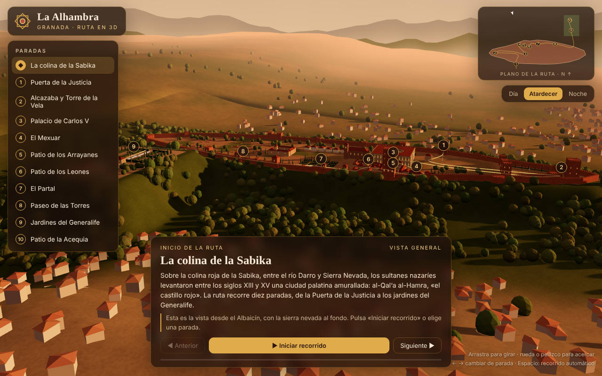 |
| AIF visual |
claude-fable-5-2 Claude Code · 2026-11-22 08:57 UTC |
290.6 k in 10 · out 22.5 k razon. 0 · caché 235.7 k |
5 | alquimia-reactiva.html | ✔ carga · alquimia-reactiva.html ✔ carga sin errores; un HTML de 28 KB sin dependencias ✔ tablero libre: se arrastra una ficha desde el panel y se suelta sobre otra (clic la pone al azar, doble clic duplica, soltar en el panel la quita) ✔ HTML + CSS → Página web; JavaScript + Servidor → Node.js; CSS + CSS → Flexbox; Micrófono + Café → Podcast; Podcast + Página web → Web Reactiva ✔ 141 de 141 elementos alcanzables desde 6 iniciales, 157 recetas, ninguna repetida ni rota (juez/alcanzables.js) ✖ no es infinito: Node.js + Flexbox → «Aquí no reacciona nada… prueba otra mezcla.» (lo dice en su respuesta) ~ Web Reactiva a medias: 6 elementos de la casa (Web Reactiva, Daniel Primo, Malandriner, Invitado, Episodio, Newsletter de los domingos) entre 141 de cultura web genérica; 2 WebFetch a webreactiva.com, después de escribir el juego, para corregir dos descripciones ✔ guarda en localStorage (12/141 tras recargar), buscador, pista («Micrófono + ❓ = 🗣️»), orden alfabético o por descubrimiento, reiniciar |
8 buen juego, poco Web Reactiva |
Tablero libre donde se arrastra una ficha sobre otra, 141 elementos y 157 recetas, todos alcanzables desde HTML, CSS, JavaScript, Servidor, Micrófono y Café, con buscador, pista y progreso guardado. El contenido es cultura del desarrollo web en general (frameworks, Docker, «Centrar un div», «Deploy en viernes») con seis elementos de la casa; las mezclas sin receta no dan nada. juicio · ▶ en vivo | 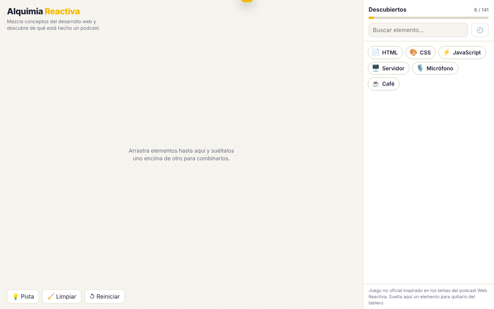 |
| CCA código |
claude-fable-5-2 Claude Code · 2026-11-22 09:01 UTC |
295.5 k in 12 · out 20.1 k razon. 0 · caché 244.8 k |
6 | .dockerignore .gitignore Dockerfile README.md docker-compose.yml package.json src/app.js src/cartService.js … y 9 más |
✔ npm ci y npm start; npm test: 13/13 en memoria (1 saltado) y 21/21 con REDIS_URL contra un Redis real ✔ 50 altas a la vez: 50 guardadas en una instancia (memoria y Redis) y repartidas entre dos instancias con el mismo Redis ✔ cada escritura es un script Lua atómico en Redis: sin leer-modificar-escribir en la aplicación ✔ dinero en céntimos enteros, una moneda por catálogo; el precio sale del catálogo al leer (se ignora el del cliente) ✔ valida cantidad 0, negativa, decimal, enorme y en texto; SKU inexistente, SKU y cartId con «../», cuerpo vacío o no JSON ~ sin Redis, dos instancias reparten el carrito (25 + 25): el README avisa de que la memoria es solo para desarrollo ~ entrega node_modules junto al código; Dockerfile y docker-compose sin probar (lo dice) |
10 escala de verdad, sin adornos |
Servicio HTTP en Node sin estado con los carritos en Redis: cada escritura es un script Lua atómico, así que 50 altas a la vez repartidas entre dos instancias con el mismo Redis guardan las 50; dinero en céntimos, precio siempre del catálogo y validación estricta. Pasa 21 tests contra un Redis real y el README explica cada decisión de escalado, pero el dominio es el mínimo: ni stock, ni descuentos, ni checkout. juicio | |
| SEC seguridad |
claude-fable-5-2 Claude Code · 2026-11-24 01:20 UTC |
1793.7 k in 30 · out 20.8 k razon. 0 · caché 1624.6 k |
15 | AUDITORIA_SEGURIDAD.md | – | – |
||
| TCI clasificación |
claude-fable-5-2 Claude Code · 2026-11-24 00:37 UTC |
952.3 k in 22 · out 16.0 k razon. 0 · caché 829.0 k |
11 | clasificacion.jsonl | – | 5 Criterio propio, lento y caro |
Tipo 97,3 %, superficie 89,7 % y F1 de áreas 0,63 frente a jev (82 incidencias idénticas). Le costó 190 s, 11 peticiones y 952 k tokens (≈ 1,88 $). juicio | |
| A3D visual |
claude-haiku-5-5 Claude Code · 2026-11-19 21:07 UTC |
981.1 k in 22 · out 55.5 k razon. 0 · caché 856.3 k |
11 | alhambra-ruta-3d.html | ✔ carga · alhambra-ruta-3d.html ✔ carga sin errores, three.js 0.160 desde jsDelivr ✔ tour, anterior/siguiente y velocidad funcionan ✖ el tubo de la ruta y el marcador tapan la vista en el tour |
8 funciona, la ruta tapa la Alhambra |
Un HTML con three.js sin errores, con paisaje (cielo, Sierra Nevada nevada, torres con tejado, cipreses del Generalife), 10 paradas con texto bueno y controles completos. Pero el tubo amarillo de la ruta y el marcador ocupan media pantalla durante el tour, y los edificios siguen siendo bloques. juicio · ▶ en vivo | 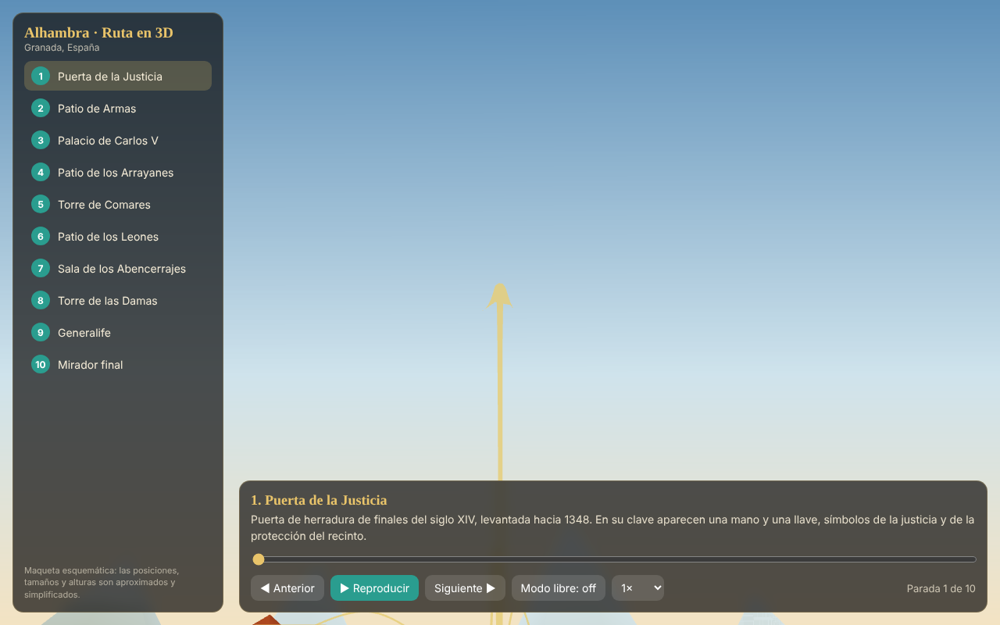 |
| AIF visual |
claude-haiku-5-5 Claude Code · 2026-11-19 21:11 UTC |
268.4 k in 10 · out 28.8 k razon. 0 · caché 200.6 k |
5 | alquimia-web-reactiva.html | ✔ carga · alquimia-web-reactiva.html ✔ carga sin errores, sin dependencias ✔ arrastrar: Código + Humano → Programador, Humano + Idea → Prompt ✔ 54 de 54 elementos alcanzables (juez/alcanzables.js) |
9 se juega y es de Web Reactiva |
Mesa de juego como Infinite Craft (arrastrar y soltar una cosa sobre otra), 54 elementos y 50 recetas, todas alcanzables desde Código, Humano, Idea y Café. El contenido sale de webreactiva.com de verdad: agentes, skills, MCP, SDD, OpenSpec, AI slop, podcast, cursos. Le falta lo infinito: con una tabla fija, la mayoría de mezclas no dan nada. juicio · ▶ en vivo | 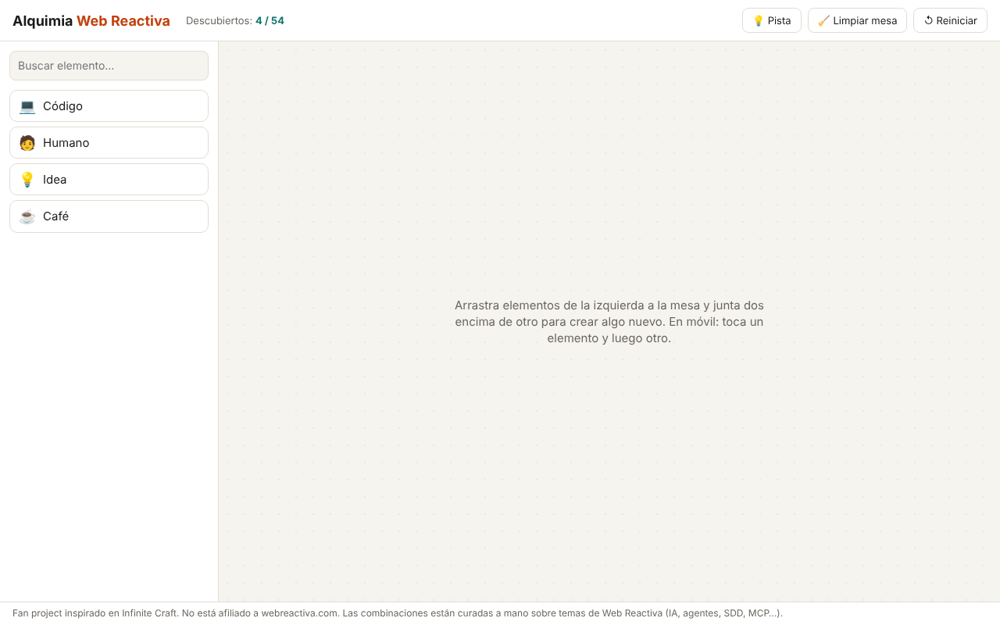 |
| CCA código |
claude-haiku-5-5 Claude Code · 2026-11-19 21:04 UTC |
635.8 k in 22 · out 32.1 k razon. 0 · caché 561.6 k |
11 | README.md examples/basic.js package.json src/cart-service.js src/cart.js src/catalog.js src/errors.js src/events.js … y 7 más |
✔ npm test: 30/30 (node:test, sin dependencias) ✔ npm run example cuadra a mano ✔ 50 escrituras concurrentes: ninguna se pierde ✔ rechaza USD en carrito EUR y el id ../ ~ 44 de 50 acaban en CONCURRENCY_CONFLICT con 5 reintentos |
9 escala de verdad |
Librería JS sin dependencias que resuelve lo que «escalable» exige: servicio sin estado, concurrencia optimista por versión con reintentos, dinero en céntimos, una moneda por carrito, precios del catálogo y no del cliente, dominio inmutable, reglas de precio e impuestos. 30 tests en verde. Le falta un adaptador real (solo memoria), caducidad de carritos y espera entre reintentos. juicio | |
| SEC seguridad |
claude-haiku-5-5 Claude Code · 2026-11-23 20:48 UTC |
1545.2 k in 30 · out 42.7 k razon. 0 · caché 1372.3 k |
15 | auditoria-seguridad.md | – | 6 Cobertura alta, sin CWE |
Informe de 45 hallazgos con fichero y línea en casi todos: cubre 25 de las 40 entradas con la regla estricta (F3 61,3), 35 con el criterio del juez, y solo 4 no son fallos. Se le escapan el oráculo de padding, la fuga de la URL interna del asistente, el IDOR de wishlists y la página de noticias; no da ningún CWE. juicio | |
| TCI clasificación |
claude-haiku-5-5 Claude Code · 2026-11-24 00:05 UTC |
498.9 k in 16 · out 28.4 k razon. 0 · caché 402.8 k |
8 | clasificacion.jsonl | – | 9 Casi igual, por céntimos |
Tipo 96,3 %, superficie 85,7 % y F1 de áreas 0,617 frente a jev (63 incidencias idénticas). Le costó 113 s, 8 peticiones y 499 k tokens (≈ 0,03 $). juicio | |
| A3D visual |
claude-opus-5-5 (medium) Claude Code · 2026-11-20 10:52 UTC |
2281.3 k in 34 · out 93.3 k razon. 0 · caché 2065.7 k |
17 | alhambra-ruta-3d.html | ✔ carga · alhambra-ruta-3d.html ✔ carga sin errores; three.js r128 y dos complementos por CDN ✔ el recorrido arranca solo y la cámara vuela de parada en parada ✔ se reconocen Sierra Nevada, Alcazaba, Carlos V, Arrayanes, Leones, Partal y la acequia del Generalife ✖ a 1280×800 la ficha tapa la parada 8 de la lista y un cuarto de la escena ~ etiquetas encimadas en la vista general ~ en Chromium sin GPU va a 1 fotograma/s: el recorrido se probó con «siguiente» a 3× |
9 la maqueta más vistosa |
Una Alhambra con three.js a media tarde que se reconoce de un vistazo (Sierra Nevada nevada, Alcazaba con la Torre de la Vela, patio circular de Carlos V, alberca de Arrayanes con su pórtico, Leones con galerías y templetes, Partal, acequia del Generalife con arcos de agua) y un recorrido de 8 paradas que arranca solo y lleva la cámara en vuelo de una a otra. Pero a 1280×800 la ficha de la parada tapa el final de la lista (la parada 8 no se puede pulsar) y un cuarto de la escena, y en la vista final las etiquetas se montan. juicio · ▶ en vivo | 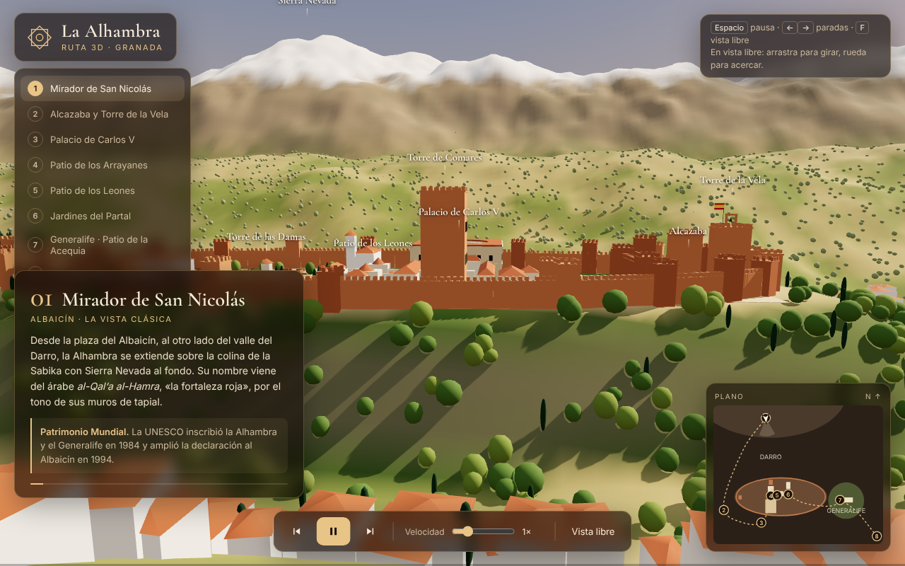 |
| AIF visual |
claude-opus-5-5 (medium) Claude Code · 2026-11-20 11:12 UTC |
244.6 k in 8 · out 31.4 k razon. 0 · caché 175.2 k |
4 | alquimia-reactiva.html | ✔ carga · alquimia-reactiva.html ✔ carga sin errores; 26 KB, sin dependencias ✔ arrastrando con el ratón: Código + Café → Programador, Idea + Bug → Feature, Código + Código → Programa ✔ 178 de 178 elementos alcanzables con 181 recetas (juez/alcanzables.js) ✖ mezcla sin receta: un chiste («Funciona en mi máquina… pero aquí no») y nada más ✔ guarda al recargar, busca, ordena y da pistas; cinco objetivos con candado ~ Web Reactiva a medias: unos 20 de 178 (Podcast, Newsletter, Dani Primo, Malandriner, Premium); el resto es cultura de programador genérica ~ arranca con los cuatro básicos ya en el tablero |
8 gran juego, Web Reactiva a medias |
Mesa libre donde se suelta una ficha sobre otra, 178 elementos y 181 recetas, todos alcanzables desde Código, Café, Idea y Bug, con pistas, buscador, guardado y cinco objetivos con candado. De Web Reactiva tiene la capa de marca de memoria (Podcast, Newsletter, Dani Primo, Malandriner, Premium), unos 20 elementos; el resto es cultura de programador genérica, y las mezclas sin receta solo dan un chiste. juicio · ▶ en vivo | 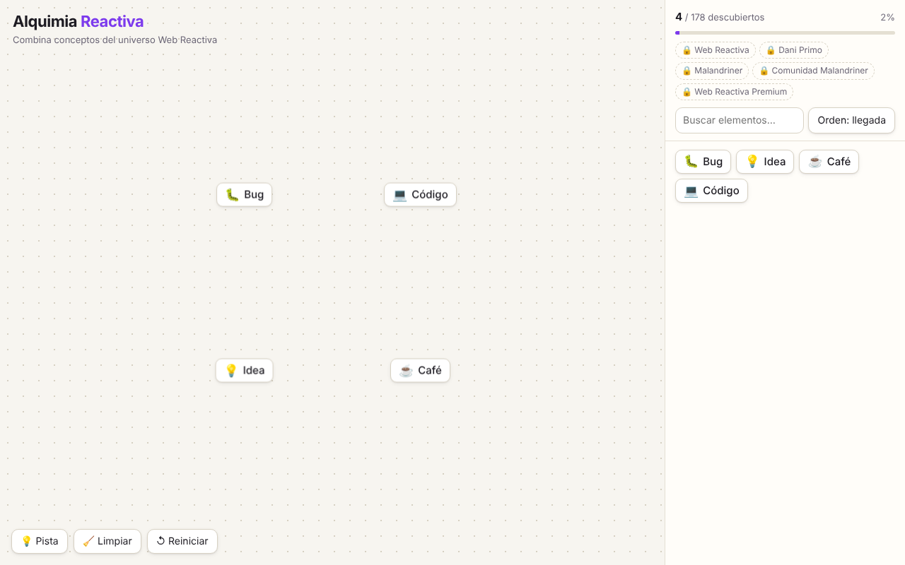 |
| CCA código |
claude-opus-5-5 (medium) Claude Code · 2026-11-20 11:27 UTC |
725.9 k in 26 · out 33.1 k razon. 0 · caché 650.2 k |
13 | README.md package.json src/application/cartService.js src/container.js src/domain/cart.js src/domain/errors.js src/domain/money.js src/domain/pricing.js … y 9 más |
✔ npm test: 19/19 (node:test, sin dependencias), estable en tres pasadas ✔ npm start arranca; alta, cambio de cantidad, quitar y vaciar por HTTP ✔ 50 altas a la vez en memoria (servicio y HTTP): 50 de 50, también con 50 productos distintos ✔ Redis real, dos instancias HTTP con REDIS_URL: 50 POST a la vez, aceptadas = guardadas; 1 acaba en 409 explícito. Con CLUSTER=1 y dos workers, igual ✔ céntimos enteros (0,10 × 3 = 30); precio del catálogo, el del cliente se ignora ✔ el objeto devuelto se puede tocar, pero lo guardado no cambia (memoria serializada y Redis) ✔ id ../ no se puede crear (el id lo genera el servicio con UUID); la ruta HTTP da 404 ~ la moneda la elige el cliente al crear y no se valida ({"x":1} se guarda); el catálogo no tiene moneda, así que un carrito USD cobra los precios en euros ~ ioredis no está en package.json: para usar Redis hay que instalarlo a mano (el README lo dice) ~ idempotencia, catálogo y cupones solo en memoria: con varias réplicas la Idempotency-Key no se comparte (lo dice) |
10 escala, y Redis funciona |
Servicio REST en Node sin dependencias, hexagonal, con carrito inmutable, céntimos, precios del catálogo, versión optimista con reintentos y backoff, y un adaptador de Redis con compare-and-swap en Lua que se conecta con REDIS_URL y aguanta 50 altas a la vez desde dos instancias sin perder nada. Lo flojo es menor: la moneda la pone el cliente sin validar, ioredis no está en package.json y la idempotencia y el catálogo solo existen en memoria, cosa que el README admite. juicio | |
| SEC seguridad |
claude-opus-5-5 (medium) Claude Code · 2026-11-24 01:17 UTC |
1712.1 k in 38 · out 17.5 k razon. 0 · caché 1576.0 k |
19 | AUDITORIA_SEGURIDAD.md | – | 5 Ve casi todo, sin CWE |
Informe de 48 hallazgos que, con el criterio del juez, cubre 38 de las 40 entradas y solo tiene 2 que no se sostienen, más 15 fallos reales sin etiquetar. La nota se queda en 5 porque 19 de sus aciertos valen medio punto (los rangos de la función entera en SQLi, path traversal, IDOR, support-access y el oráculo de padding cuentan como sin línea), varias líneas caen fuera de ±10 y no da ningún CWE. juicio | |
| TCI clasificación |
claude-opus-5-5 (medium) Claude Code · 2026-11-24 00:30 UTC |
768.0 k in 24 · out 14.8 k razon. 0 · caché 682.1 k |
12 | clasificacion.jsonl | – | 8 Mejor en áreas, caro |
Tipo 97,0 %, superficie 87,7 % y F1 de áreas 0,668 frente a jev (86 incidencias idénticas). Le costó 125 s, 12 peticiones y 768 k tokens (≈ 0,79 $). juicio | |
| A3D visual |
claude-sonnet-5-5 (medium) Claude Code · 2026-11-20 10:52 UTC |
2661.8 k in 38 · out 102.6 k razon. 0 · caché 2428.4 k |
19 | alhambra_ruta_3d.html | ✔ carga · alhambra_ruta_3d.html ✔ carga sin errores, three.js r128 desde cdnjs ✔ el recorrido a pie viaja de parada en parada; la lista y la vista Dron también ✔ se reconocen Justicia, Carlos V, Leones, Comares y la acequia del Generalife ✖ a pie, el Mexuar, Arrayanes y el mirador final encuadran un muro ~ la ficha en ruta pone «Hacia:» la parada más cercana, no la siguiente ~ deja en el HTML el gancho de pruebas window.__alhambra |
9 se pasea dentro, encuadres flojos |
Una maqueta con three.js que se recorre a pie a la altura de los ojos por 9 paradas en orden de visita, y se reconoce: Puerta de la Justicia con la llave, Alcazaba, patio circular de Carlos V, fuente de los doce leones con sus canales, Comares y la acequia del Generalife con surtidores. Pero en la vista Paseo, que es la del recorrido, varias paradas encuadran un muro: el Mexuar es un panel de azulejos a un palmo, en Arrayanes no se ve el estanque y el mirador final mira a una muralla. juicio · ▶ en vivo | 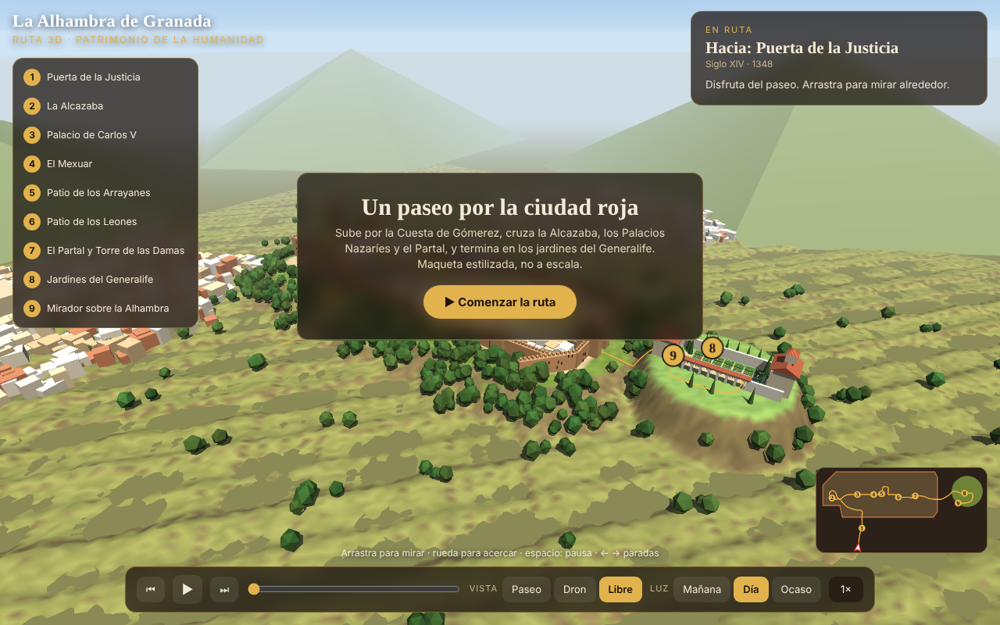 |
| AIF visual |
claude-sonnet-5-5 (medium) Claude Code · 2026-11-20 11:11 UTC |
186.7 k in 8 · out 17.6 k razon. 0 · caché 144.9 k |
4 | alquimia-web-reactiva.html | ✔ carga · alquimia-web-reactiva.html ✔ carga sin errores; 22 KB, sin dependencias ✔ arrastrando con el ratón: Estado + Evento → Reactividad, Píxel + Pantalla → Resolución, Estado + Estado → Store ✔ 63 de 63 elementos alcanzables con 59 recetas (juez/alcanzables.js) ✖ mezcla sin receta: «no pasa nada…» y las fichas tiemblan ✔ guarda descubrimientos y mesa al recargar; buscador ✖ sin pistas ✖ «Web Reactiva» leído como programación reactiva + responsive: nada de la web, el podcast ni la comunidad |
7 buen juego, otra Web Reactiva |
Mesa libre donde se suelta una ficha sobre otra, 63 elementos y 59 recetas, todos alcanzables desde Estado, Evento, Píxel y Pantalla, con buscador y guardado de la mesa. Pero leyó «Web Reactiva» como programación reactiva más diseño responsive (señales, Virtual DOM, media queries, clamp()): de la web, el podcast o la comunidad no hay nada, y las mezclas sin receta no dan nada. juicio · ▶ en vivo | 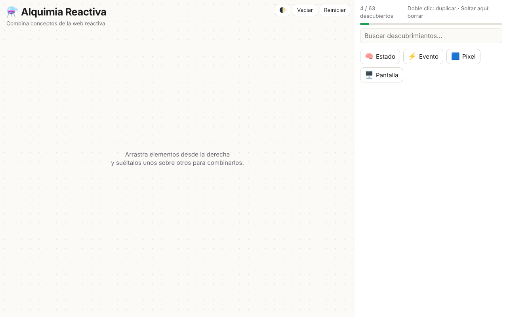 |
| CCA código |
claude-sonnet-5-5 (medium) Claude Code · 2026-11-20 11:16 UTC |
124.3 k in 6 · out 8.3 k razon. 0 · caché 101.2 k |
3 | README.md cart/__init__.py cart/__pycache__/__init__.cpython-313.pyc cart/__pycache__/domain.cpython-313.pyc cart/__pycache__/repository.cpython-313.pyc cart/__pycache__/service.cpython-313.pyc cart/api.py cart/domain.py … y 3 más |
✔ python3 tests/test_cart.py: 8/8, sin dependencias ✔ python3 -m cart.api arranca; alta, cambio de cantidad, quitar y vaciar por HTTP ✔ 50 altas a la vez en memoria (servicio y HTTP): 50 de 50 ✔ Redis real, dos instancias HTTP: 50 POST a la vez, aceptadas = guardadas; 2-6 acaban en 409 explícito tras 8 reintentos ✔ céntimos enteros (0,10 × 3 = 30); precio del catálogo, el del cliente se ignora ~ una sola moneda fija (EUR): el catálogo no tiene moneda, así que no hay nada que mezclar ~ id ../ lo para la ruta HTTP (404); el servicio lo acepta ✖ el carrito devuelto se puede mutar y cambia lo guardado en memoria: 500 unidades a 1 ¢ sin pasar por catálogo ni límites ~ RedisCartRepository no está conectado en api.py ni exportado en cart/__init__.py: hay que montarlo a mano |
9 escala en 400 líneas |
Python sin dependencias con servicio sin estado, versión optimista con reintentos y un adaptador de Redis con compare-and-swap en Lua y TTL que funciona: con dos instancias sobre el mismo Redis, 50 altas a la vez acaban guardadas o en un 409 explícito, sin pérdidas. Pero el carrito que devuelve se puede mutar y en memoria eso cambia lo guardado (500 unidades a 1 céntimo sin pasar por el catálogo), solo hay una moneda fija y el adaptador de Redis no lo probó ni lo conectó a la API. juicio | |
| SEC seguridad |
claude-sonnet-5-5 (medium) Claude Code · 2026-11-24 01:15 UTC |
1004.3 k in 26 · out 11.5 k razon. 0 · caché 905.9 k |
13 | SECURITY_AUDIT.md | – | 4 Ve casi todo, sin líneas |
Informe de 29 hallazgos agrupados en el que el juez reconoce 33 de las 40 entradas y solo seis no se sostienen, pero la nota cuenta 16 (F3 40,9) porque solo da una línea en todo el informe y cada acierto sin línea vale medio. Se le escapan la fuga de la URL interna del asistente, el token de soporte en claro y en la respuesta, el open redirect del LoginForm, el XSS de reseñas y la página de noticias; no da ningún CWE. juicio | |
| TCI clasificación |
claude-sonnet-5-5 (medium) Claude Code · 2026-11-24 00:56 UTC |
573.1 k in 18 · out 10.0 k razon. 0 · caché 507.3 k |
9 | clasificacion.jsonl | – | 8 El más rápido, superficie justa |
Tipo 96,3 %, superficie 84,3 % y F1 de áreas 0,628 frente a jev (78 incidencias idénticas). Le costó 69 s, 9 peticiones y 573 k tokens (≈ 0,29 $). juicio | |
| A3D visual |
google/gemini-4-carbon OpenCode · 2026-11-20 12:12 UTC |
111.2 k in 39.2 k · out 28.8 k razon. 1.2 k · caché 42.0 k |
4 | alhambra-ruta-3d.html | ✔ carga · alhambra-ruta-3d.html ✔ carga sin errores de consola; three.js 0.164.1 desde jsDelivr (75 KB) ✔ 8 paradas reales en orden de visita: Justicia, Alcazaba, Carlos V, Arrayanes, Leones, Partal, Cipreses, Generalife ✔ ruta guiada: la cámara sigue la curva entre paradas (~56 s el recorrido); también con botones, píldoras y deslizador ✔ se reconoce: arco de herradura de la Justicia, patio circular de Carlos V, alberca de Arrayanes, torres almenadas, cipreses del Generalife ✖ en la parada de los Leones los tejados tapan el patio y la fuente ~ en el contenedor el render por software va a 1,3 fps; el avance usa el tiempo real con dt ≤ 0,05, por eso en 30 s solo llega al 4 % ✔ textos correctos (Yusuf I 1348, Machuca, 124 columnas, Muhammad V, Acequia Real) |
9 se recorre y se reconoce |
Una maqueta con three.js de ocho paradas, de la Puerta de la Justicia al Generalife, con ruta guiada que lleva la cámara por una curva luminosa, fichas históricas correctas y luz de atardecer, día y noche. Se reconocen el arco de la Justicia, el patio circular de Carlos V, la alberca de Arrayanes y los cipreses, pero en los Leones los tejados tapan el patio. juicio · ▶ en vivo | 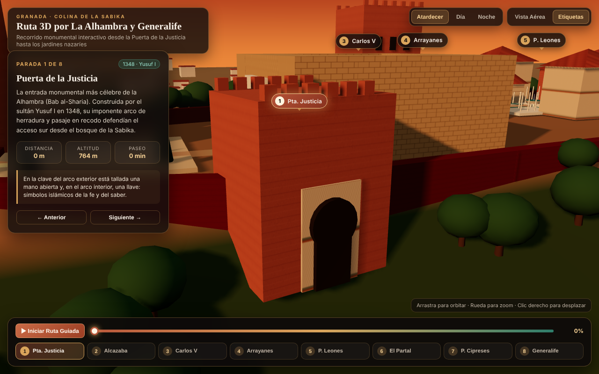 |
| AIF visual |
google/gemini-4-carbon OpenCode · 2026-11-20 12:37 UTC |
642.7 k in 77.9 k · out 80.2 k razon. 9.7 k · caché 474.8 k |
16 | index.html | ✔ carga · index.html ✔ carga sin errores; un HTML de 115 KB sin dependencias ✔ lienzo libre: se arrastra una ficha sobre otra (también doble clic duplica, clic derecho borra, zoom y desplazamiento) ✔ Código + Café → Programador; Micrófono + Micrófono → Podcast; Código + Código → Web; Web + Podcast → Web Reactiva; Programador + Web Reactiva → Daniel Primo ✔ 112 de 112 elementos alcanzables desde los 4 iniciales (juez/alcanzables.js); 389 pares con receta, 1 receta duplicada que no cuenta ✔ modo infinito: Café + Web (sin receta) → «Micro-Web con Café», con su ficha de «primer descubrimiento» ✔ guarda en localStorage (9/112 tras recargar), buscador, pistas, códice por categorías y 13 logros ~ contenido de memoria (la búsqueda web quedó cancelada): malandriner, Zona Premium, Telegram, café virtual, mastermind; algún detalle sin comprobar («todos los martes», «Episodio 500») |
10 el AIF más completo |
Mesa libre donde se suelta una ficha sobre otra, 112 elementos y 389 recetas todos alcanzables desde cuatro iniciales (Código, Micrófono, Café, Curiosidad), un generador para las mezclas sin receta, pistas, buscador, códice, logros y guardado. El contenido es de Web Reactiva de verdad (malandriner, Daniel Primo, Zona Premium, Telegram, café virtual, mastermind), aunque sacado de memoria porque la búsqueda web se canceló. juicio · ▶ en vivo | 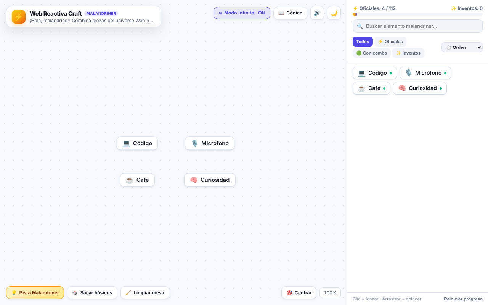 |
| CCA código |
google/gemini-4-carbon OpenCode · 2026-11-20 12:54 UTC |
835.4 k in 93.8 k · out 40.8 k razon. 6.3 k · caché 694.5 k |
25 | .gitignore README.md package.json src/application/cart-service.ts src/application/ports.ts src/domain/cart.ts src/domain/errors.ts src/domain/events.ts … y 16 más |
✔ sin dependencias: npm test (9/9 con node:test) y npm start con Node 22 y TypeScript nativo ✔ 50 altas a la vez: 50 guardadas en una instancia y en dos instancias con el mismo SQLite ✔ dinero en céntimos (0,10 × 3 = 0,30), sumar EUR y USD da error, precio del catálogo (se ignora el del cliente) ✔ valida cantidades (0, negativa, decimal, enorme), sku inexistente, ids con «../», cuerpo vacío ✖ la caché L1 de cada instancia sirve lecturas viejas cuando escribe la otra (juez/cache-l1.mjs) ~ stock, idempotencia y eventos viven en la memoria de cada proceso; el almacenamiento compartido es un fichero SQLite (una sola máquina) |
9 escala en una máquina |
TypeScript sobre Node 22 sin dependencias, hexagonal, con dinero en céntimos, precio del catálogo, cupones, IVA, envío, idempotencia, checkout con reserva de stock y SQLite en WAL con compare-and-set por versión: 50 altas a la vez no pierden nada, ni repartidas entre dos instancias con el mismo fichero. Pero cada instancia guarda una caché L1 que sirve lecturas viejas cuando escribe la otra, y el stock y la idempotencia viven en memoria de cada proceso. juicio | |
| A3D visual |
google/gemini-4-hydrogen OpenCode · 2026-11-20 15:20 UTC |
220.3 k in 59.3 k · out 37.6 k razon. 7.2 k · caché 116.2 k |
7 | alhambra-ruta-3d.html | ✔ carga · alhambra-ruta-3d.html ✔ carga sin errores; 98 KB con three.js r128 de cdnjs ✔ 8 paradas en orden de visita: Justicia, Alcazaba, Carlos V, Arrayanes, Embajadores, Leones, Partal, Generalife ✔ la ruta guiada arranca sola y la cámara recorre la curva a pie de calle; desde la parada 4 pasa a la 5 (47,7 % a los 30 s a 1,7 fps) ✔ se reconoce: arco de herradura, patio circular de Carlos V, alberca de Arrayanes con pórticos, fuente con leones, acequia del Generalife con surtidores ✖ marcadores numerados enormes en medio de la vista; en el Salón de Embajadores la cámara queda pegada a un muro ✔ textos correctos (Yusuf I, Machuca, 124 columnas, Muhammad V, Muhammad III, Acequia Real) |
9 a pie de calle, tapado |
Ruta guiada a pie de calle por ocho paradas con three.js, que arranca sola y además se puede explorar en órbita o a pie con WASD; se reconocen la fuente de los Leones, la alberca de Arrayanes, el patio circular de Carlos V y la acequia del Generalife. Pero unos marcadores numerados enormes tapan media pantalla en cada parada y en el Salón de Embajadores la cámara queda contra un muro. juicio · ▶ en vivo | 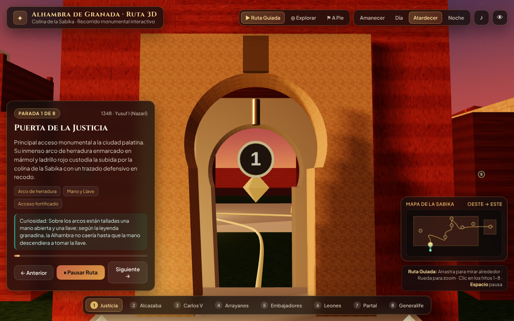 |
| AIF visual |
google/gemini-4-hydrogen OpenCode · 2026-11-20 15:25 UTC |
405.4 k in 72.8 k · out 32.2 k razon. 12.9 k · caché 287.6 k |
8 | index.html | ✔ carga · index.html ✔ carga sin errores; un HTML de 92 KB sin dependencias ✔ lienzo libre: se arrastra una ficha sobre otra (clic saca al centro, doble clic duplica, papelera) ✔ Código + Web → HTML; Web + Podcast → Web Reactiva; IA + Podcast → Robotito; Código + Código → Refactor ✔ 109 de 109 elementos alcanzables desde 4 iniciales, 255 recetas sin duplicados (juez/alcanzables.js) ✖ sin modo infinito: HTML + Robotito no tiene receta y las fichas solo tiemblan ✔ contenido sacado de webreactiva.com: Robotito, +710 episodios, Zona Premium, En Pantuflas, Atlas Malandriner, LinkedIn-5-5, Fichómetro, las 5 etapas de Programa con IA ✔ guarda en localStorage (8 elementos tras recargar), buscador, pista de Robotito, Atlas con rangos |
9 de la casa, sin infinito |
Mesa libre donde se suelta una ficha sobre otra, 109 elementos y 255 recetas todos alcanzables desde Código, Web, IA y Podcast, con pista de Robotito, buscador, Atlas Malandriner con rangos y guardado. El contenido sale de webreactiva.com (Robotito, Zona Premium, En Pantuflas, Atlas Malandriner, Programa con IA), pero las mezclas sin receta no dan nada. juicio · ▶ en vivo | 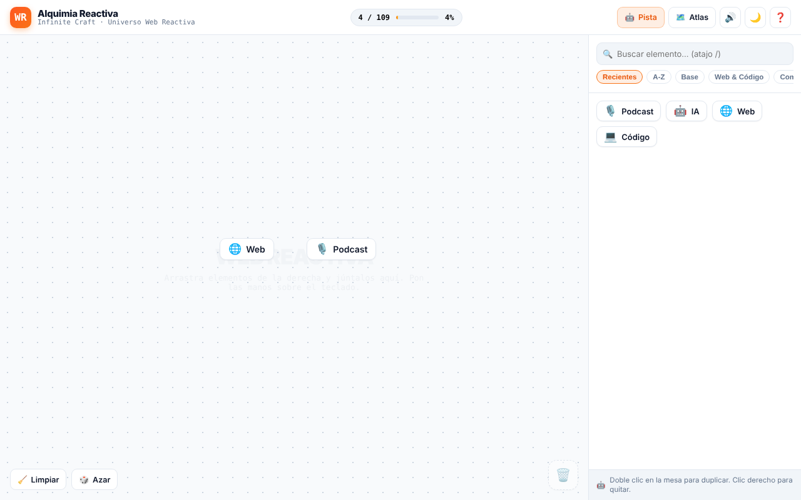 |
| CCA código |
google/gemini-4-hydrogen OpenCode · 2026-11-20 15:29 UTC |
678.4 k in 74.2 k · out 31.4 k razon. 6.2 k · caché 566.5 k |
22 | README.md examples/demo.mjs package.json src/application/cart-service.ts src/domain/cart-item.ts src/domain/cart.ts src/domain/errors.ts src/domain/events.ts … y 65 más |
✔ npm test: tsc + 14/14 (node:test); npm run demo recorre carrito, cupón y checkout ✖ 50 altas a la vez: 5 guardadas y 45 rechazadas con CONCURRENCY_CONFLICT (5 reintentos sin espera) ✔ dinero en céntimos (0,10 × 3 = 30), EUR + USD da error, precio del catálogo (se ignora el del cliente) ~ valida cantidades negativas, decimales y enormes; acepta cantidad 0 ~ librería sin servidor: solo adaptadores en memoria; Redis o Postgres, en el README ~ entrega dist/ compilado; usa el tsc global de la máquina (no es dependencia) |
8 bien hecho, poca concurrencia |
Librería TypeScript sin dependencias, hexagonal, con dinero en céntimos, precio del catálogo, promociones (porcentaje, fijo, 3x2, volumen), IVA por categoría, envío, idempotencia, fusión de carritos y checkout con compensación de stock; 14 tests y una demo que funcionan. La versión optimista no pierde datos, pero con 50 altas a la vez rechaza 45 porque reintenta cinco veces sin esperar, y solo hay adaptadores en memoria. juicio | |
| A3D visual |
google/gemini-4-neon OpenCode · 2026-11-20 21:24 UTC |
1011.5 k in 92.4 k · out 48.9 k razon. 9.9 k · caché 860.3 k |
19 | alhambra-3d.html | ✔ carga · alhambra-3d.html ✔ carga sin errores; 103 KB con three.js 0.160 de jsDelivr ✔ 7 paradas en orden de visita: Justicia, Alcazaba, Carlos V, Arrayanes, Leones, Partal, Generalife ✔ la ruta guiada arranca sola: Alcazaba a los 60 s y Carlos V a los 120 s con render por software a 2 fps ✔ se reconoce: patio circular de dos pisos de Carlos V, pórtico de Arrayanes con la torre de Comares, templete del Patio de los Leones, Torre de la Vela, acequia del Generalife ✖ en el Generalife los chorros de agua se dibujan como cuadrados blancos enormes que tapan media vista ✔ textos correctos (Yusuf I, Machuca, pórtico de siete arcos, Muhammad III, Torre de la Vela) |
9 se recorre y se reconoce |
Ruta guiada a pie de calle por siete paradas con three.js, que arranca sola, con modos de órbita, paseo libre y panorámica, minimapa y tres luces; se reconocen el patio circular de Carlos V, el pórtico de Arrayanes con Comares, el templete de los Leones y la acequia del Generalife, y las fichas son correctas. Pero en el Generalife los chorros de agua se ven como cuadrados blancos que tapan media pantalla. juicio · ▶ en vivo | 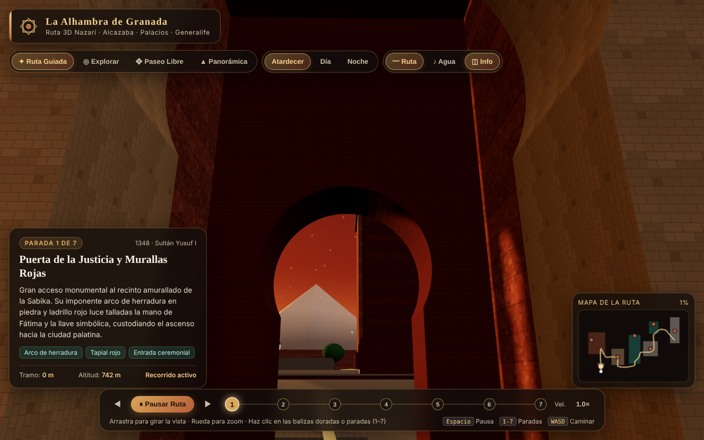 |
| AIF visual |
google/gemini-4-neon OpenCode · 2026-11-20 21:45 UTC |
894.7 k in 134.6 k · out 54.1 k razon. 12.6 k · caché 693.4 k |
11 | index.html | ✔ carga · index.html ✔ carga sin errores; un HTML de 122 KB sin dependencias ✔ tablero libre: se suelta una ficha sobre otra (clic añade, doble clic duplica, arrastrar al panel retira) ✔ Pantuflas + Código → Developer; Pantuflas + Podcast → Dani Primo; Código + IA → Prompt; Podcast + Podcast → +710 Episodios ✔ 144 de 144 elementos alcanzables desde 4 iniciales, 360 recetas (juez/alcanzables.js) ~ infinito con interruptor: Dani Primo + Developer no da nada con el Modo Libre apagado (por defecto) y «Meta-Developer» con él encendido ✔ contenido de webreactiva.com (8 webfetch): Atlas Malandriner, Selector de Modelos, Bingo de Mentiras, Chuleta OpenCode, Robotito, LinkedIn-5-5, Fichómetro ✔ guarda en localStorage (8/144 tras recargar), buscador, pistas en dos niveles, Atlas con rarezas y compartir |
10 el AIF más documentado |
Tablero libre donde se suelta una ficha sobre otra, 144 elementos y 360 recetas todos alcanzables desde Pantuflas, Código, IA y Podcast, con Atlas Malandriner, pistas en dos niveles, buscador y guardado; las mezclas sin receta dan fusiones con el Modo Libre encendido. El contenido sale de ocho páginas de webreactiva.com: Selector de Modelos, Bingo de Mentiras, Chuleta OpenCode, Robotito, LinkedIn-5-5, Fichómetro, skills y SDD. juicio · ▶ en vivo | 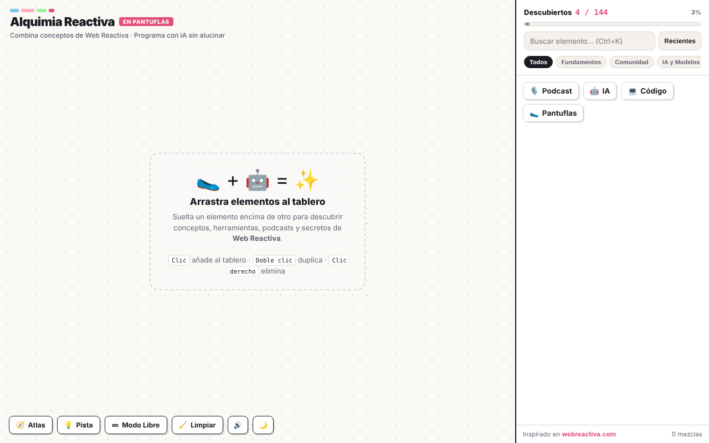 |
| CCA código |
google/gemini-4-neon OpenCode · 2026-11-20 21:54 UTC |
213.4 k in 49.2 k · out 33.9 k razon. 5.1 k · caché 125.3 k |
12 | package.json src/api/server.ts src/application/cart-service.ts src/bootstrap.ts src/demo.ts src/domain/cart.ts src/domain/errors.ts src/domain/events.ts … y 19 más |
✔ node src/demo.ts: invitado + usuario, fusión, cupón WELCOME10, checkout idempotente y 8 eventos ✖ sin tests: npm test busca tests/*.test.ts, que no existe (0 tests) ✖ tsc --noEmit: 9 errores (structuredClone no está en sus declaraciones de Node) ✔ 50 altas a la vez: 50 guardadas (cerrojo por carrito en el proceso) ✖ dos instancias con el mismo FileCartRepository: 20 altas aceptadas, 10 guardadas ✔ dinero en céntimos (0,10 × 3 = 30), EUR + USD da error, precio del catálogo (se ignora el del cliente) ✔ valida cantidad 0, negativa, decimal y enorme; «../» en producto o carrito → no encontrado ✖ sin README: la sesión se cortó antes |
6 sólido pero sin terminar |
TypeScript hexagonal sin dependencias, que Node 22 ejecuta tal cual: dinero en céntimos con moneda comprobada, precio del catálogo, promociones, IVA por región, envío, idempotencia, fusión y checkout con reserva de stock, más una API HTTP y una demo que funciona. La sesión se cortó por falta de crédito antes de los tests y el README, y la versión optimista solo aguanta dentro de un proceso: dos instancias sobre el mismo fichero pierden la mitad de las altas sin avisar. juicio | |
| A3D visual |
gpt-6.2-astra (default) Codex CLI · 2026-11-20 09:41 UTC |
111.6 k in 18.4 k · out 6.4 k razon. 23 · caché 86.8 k |
5 | alhambra.html | ✔ carga · alhambra.html ✔ abre sin errores de consola ✔ 3D propio en canvas 2D (sin librerías, 7,9 KB): se gira arrastrando y tiene zoom ✖ «Siguiente parada» solo cambia el texto y resalta la chincheta: la cámara no se mueve ✔ ruta de 5 paradas reales en orden de visita ~ se reconocen las torres de la Alcazaba y el patio circular de Carlos V; las albercas apenas se ven ✔ textos de las paradas correctos |
6 maqueta limpia, la cámara no viaja |
Una maqueta en 3D hecha a mano en canvas, sin librerías y en 8 KB, con torres almenadas y el patio circular de Carlos V, y una ruta de cinco paradas reales con textos correctos. Pero «Siguiente parada» solo cambia el texto: la cámara se queda quieta, así que la ruta no se recorre. juicio · ▶ en vivo | 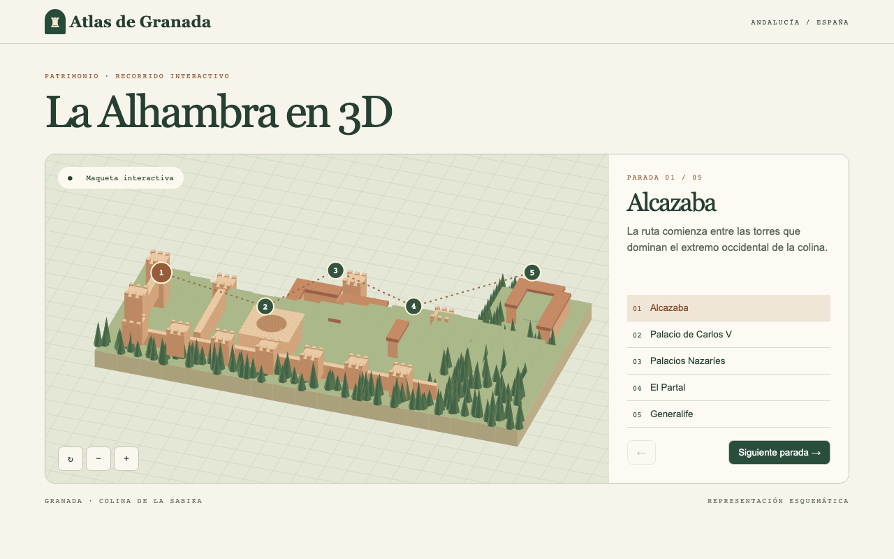 |
| AIF visual |
gpt-6.2-astra (default) Codex CLI · 2026-11-20 09:43 UTC |
129.8 k in 15.6 k · out 6.8 k razon. 54 · caché 107.4 k |
5 | index.html | ✔ carga · index.html ✔ abre sin errores de consola ✔ Código + Idea → Proyecto; IA + Código → Copilot; Comunidad + IA → Programa con IA ✔ guarda el progreso al recargar ✔ 35 de 35 elementos alcanzables con 32 recetas ✖ una mezcla sin receta no da nada («Sin reacción») ~ dos casillas y un botón; se arrastra o se pulsa, no hay lienzo libre ✔ Web Reactiva de verdad sin buscar en la web: Zona Malandriner, En pantuflas, Programa con IA, Atlas MCP, OpenSpec |
8 pequeño, completo y de la casa |
Un juego de casillas con 35 elementos y 32 recetas, todos alcanzables, con contenido reconocible de Web Reactiva (Zona Malandriner, En pantuflas, Atlas MCP) sin haber consultado la web. Guarda, busca y da pistas en 9 KB, pero no hay lienzo libre y las mezclas sin receta no dan nada. juicio · ▶ en vivo | 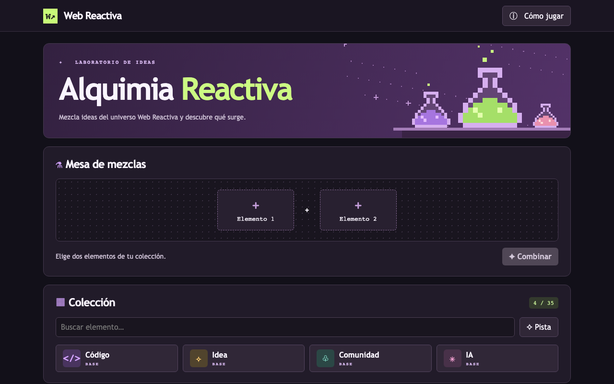 |
| CCA código |
gpt-6.2-astra (default) Codex CLI · 2026-11-20 09:46 UTC |
191.7 k in 16.4 k · out 6.0 k razon. 73 · caché 169.2 k |
9 | cart.js index.html media/alpes.jpg media/bosque.jpg media/lago.jpg media/valle.jpg style.css |
✔ se abre index.html sin instalar nada ✖ sin tests ✔ suma, resta, quita y recalcula envío y total; guarda al recargar ✔ precios en céntimos, una sola moneda ✔ localStorage manipulado: cantidades negativas, decimales e ids falsos fuera; 1e9 se queda en 99 ✖ sin servidor, API ni almacenamiento compartido: no hay concurrencia ni escala ✖ sin README ~ no hay botón de vaciar |
4 maqueta de carrito, sin escalar |
Una página de carrito bien acabada con cuatro láminas, envío gratis desde 75 € y persistencia en localStorage que valida lo que lee. No hay tests, ni servidor, ni README: «escalable» se queda en que el catálogo es una lista que se puede ampliar. juicio | |
| A3D visual |
gpt-6.2-astra (medium) Codex CLI · 2026-11-20 09:56 UTC |
94.6 k in 15.3 k · out 7.1 k razon. 79 · caché 72.1 k |
4 | alhambra.html | ✔ carga · alhambra.html ✔ abre sin errores de consola ✔ 3D propio en canvas (17 KB, sin librerías): se gira arrastrando y tiene zoom ✖ «Siguiente parada» cambia la parada activa y su texto, pero la cámara no se mueve ✔ ruta de 6 paradas en orden de visita, con el Paseo de las Torres ~ se ven las torres de la Alcazaba y la alberca del Partal; el patio de Carlos V no se distingue ✔ textos de las paradas correctos |
6 maqueta bonita, la cámara no viaja |
Una maqueta 3D hecha a mano en canvas, más trabajada que con el esfuerzo por defecto, con una ruta de seis paradas reales y textos correctos. Pero repite el fallo: «Siguiente parada» no mueve la cámara, así que la ruta no se recorre. juicio · ▶ en vivo |  |
| AIF visual |
gpt-6.2-astra (medium) Codex CLI · 2026-11-20 09:59 UTC |
67.3 k in 12.1 k · out 5.8 k razon. 86 · caché 49.3 k |
3 | index.html | ✔ carga · index.html ✔ abre sin errores de consola ✔ Código + Micrófono → Podcast; Código + Idea → Proyecto; Comunidad + Comunidad → Zona Malandriner ✔ guarda el progreso al recargar ✔ 36 de 36 elementos alcanzables con 32 recetas ✖ una mezcla sin receta no da nada («Sin reacción») ~ se pulsan o arrastran dos elementos a la mesa, sin lienzo libre ~ Web Reactiva a medias: Zona Malandriner, Top Malandriner, podcast premium y newsletter; el resto es desarrollo web genérico |
7 se juega, Web Reactiva a medias |
Un juego de mesa de mezclas con 36 elementos y 32 recetas, todos alcanzables, que guarda, busca y da pistas. Lo de Web Reactiva se queda en Zona Malandriner, Top Malandriner, el podcast premium y la newsletter: el resto es frontend, backend, API y framework, y las mezclas sin receta no dan nada. juicio · ▶ en vivo | 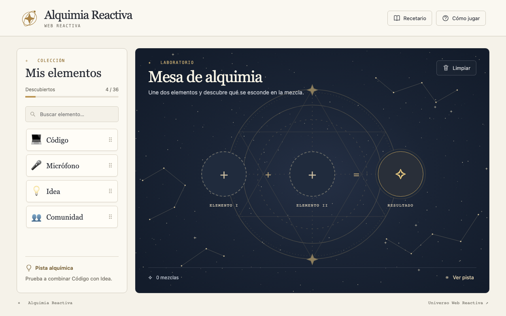 |
| CCA código |
gpt-6.2-astra (medium) Codex CLI · 2026-11-20 10:01 UTC |
177.8 k in 13.9 k · out 6.1 k razon. 116 · caché 157.7 k |
8 | app.js assets/product0.webp assets/product1.webp assets/product2.webp cart.js index.html style.css |
✔ se abre index.html sin instalar nada ✖ sin tests ✔ suma, resta, quita y recalcula; envío gratis desde 60 €; guarda al recargar ✔ precios en céntimos, una sola moneda ✔ localStorage manipulado: negativos, decimales e ids falsos fuera; 1e9 se queda en 99 ✖ sin servidor, API ni almacenamiento compartido: no hay concurrencia ni escala ✖ sin README ~ no hay botón de vaciar |
4 tienda de café, sin escalar |
Una página de carrito cuidada para una tienda de café, con fotos generadas, guardar para después y envío gratis desde 60 €, que valida lo que lee de localStorage. No hay tests, ni servidor, ni README: «escalable» es que el catálogo es una lista ampliable. juicio | |
| A3D visual |
gpt-6.2-sol (medium) Codex CLI · 2026-11-20 09:01 UTC |
1688.3 k in 70.6 k · out 21.4 k razon. 2.9 k · caché 1593.5 k |
32 | alhambra.html | ✔ carga · alhambra.html ✔ abre sin errores de consola ✔ «Siguiente» lleva la cámara por las 5 paradas ~ «Iniciar ruta» encuadra la primera parada y no avanza sola ✔ se reconocen las torres de la Alcazaba, el patio circular de Carlos V y la acequia del Generalife ✔ textos de las paradas correctos ~ 790 KB: three.js y las fuentes van dentro del HTML |
10 maqueta clara y se recorre |
Una maqueta 3D en low-poly con las torres de la Alcazaba, el patio circular de Carlos V y la acequia del Generalife, y una ruta de cinco paradas en orden de visita que la cámara recorre con «Siguiente». La vista no se tapa, las etiquetas se leen y los textos son correctos; el botón «Iniciar ruta» solo encuadra la primera parada. juicio · ▶ en vivo | 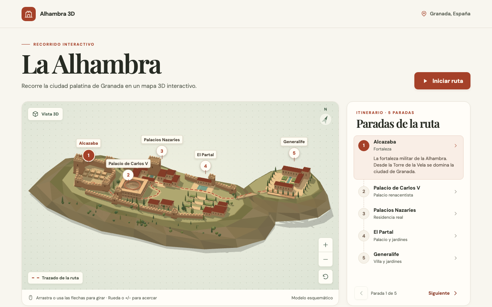 |
| AIF visual |
gpt-6.2-sol (medium) Codex CLI · 2026-11-20 09:11 UTC |
1479.8 k in 66.3 k · out 19.2 k razon. 2.1 k · caché 1392.3 k |
27 | index.html | ✔ carga · index.html ✔ abre sin errores de consola ✔ Código + Curiosidad → Proyecto; Café + Código → Terminal ✔ guarda el progreso al recargar ✔ 52 de 52 elementos alcanzables con 84 recetas (juez/alcanzables con node) ✖ una mezcla sin receta no da nada («Esta mezcla no ha reaccionado») ~ se combina en dos ranuras y un botón, no en un lienzo libre ✔ contenido de Web Reactiva: En pantuflas, Esperando a Eskainet, Wikipoke, Premium, Telegram, OpenSpec |
8 pulido y muy de la casa |
Un juego de ranuras con 52 elementos y 84 recetas, todos alcanzables, sacados de lo que encontró en webreactiva.com: el podcast, En pantuflas, Esperando a Eskainet, Wikipoke o el MCP de Web Reactiva. Guarda, busca y da pistas, pero no hay lienzo libre y las mezclas sin receta no dan nada. juicio · ▶ en vivo | 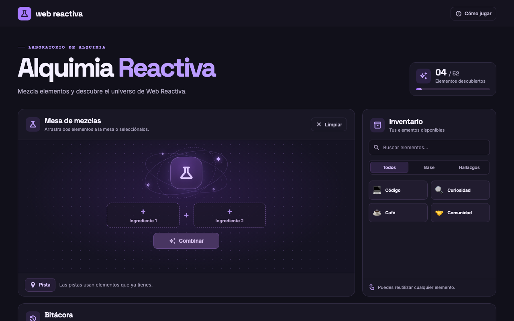 |
| CCA código |
gpt-6.2-sol (medium) Codex CLI · 2026-11-20 09:19 UTC |
1193.2 k in 47.9 k · out 18.9 k razon. 2.7 k · caché 1123.7 k |
27 | README.md package.json public/assets/bolsa.webp public/assets/cuenco.webp public/assets/dm-sans-OFL.txt public/assets/dm-sans.woff2 public/assets/dm-serif-display-OFL.txt public/assets/dm-serif-display.woff2 … y 13 más |
✔ npm start sin dependencias: sirve la app en el puerto 3000 ✔ npm test: 4 de 4 ✔ precios en céntimos; 0,10 × 3 = 30 ✔ id con ../ ignorado; cantidades negativas o decimales, a 0; por encima de las existencias, al tope ✔ el localStorage manipulado solo conserva id y cantidad válidos ✖ no hay API: el carrito vive en el navegador (localStorage); el servidor solo sirve ficheros ✖ las 50 altas a la vez no se pueden probar: no hay servicio ✖ quoteCart devuelve el producto del catálogo: cambiar su precio cambia el catálogo ~ no hay botón de vaciar; el carrito se vacía al confirmar el pedido |
5 bonita tienda, no escala |
Una tienda en el navegador muy cuidada, con fotos generadas, cupón, envío y deshacer, y un carrito con funciones puras en céntimos que valida bien lo que lee de localStorage. «Escalable» lo entiende como un catálogo ampliable: no hay servicio, ni almacenamiento compartido, ni concurrencia, y el README solo dice que para producción haría falta un servidor. juicio | |
| A3D visual |
nvidia/nemotron-3-ultra-550b-a55b:free OpenCode · 2026-11-19 20:57 UTC |
54.3 k in 8.9 k · out 10.0 k razon. 333 · caché 35.1 k |
3 | alhambra-3d-route.html | ✔ carga · alhambra-3d-route.html ✔ carga sin errores, three.js 0.160 desde unpkg ✔ el tour avanza (captura a 8 s y 38 s) ✖ 2 errores al iniciar el tour (CatmullRomCurve3.getPoint) |
6 funciona, poco Alhambra |
Un HTML con three.js que carga, enseña 14 paradas con nombre y un tour animado con cámara que sigue una curva, lista de paradas y teclas. Las paradas y el orden son los de una visita real, pero los edificios son cajas y cilindros sin nada nazarí, la cámara atraviesa los volúmenes y salen dos errores al empezar. juicio · ▶ en vivo | 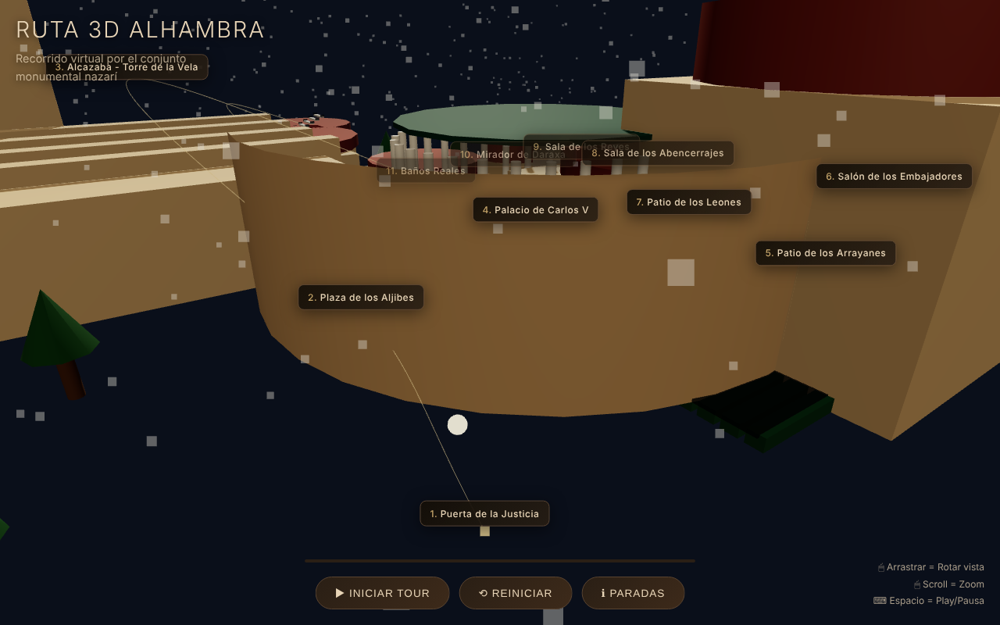 |
| AIF visual |
nvidia/nemotron-3-ultra-550b-a55b:free OpenCode · 2026-11-19 21:00 UTC |
77.3 k in 14.0 k · out 14.9 k razon. 195 · caché 48.2 k |
4 | alchemy.html | ✔ carga · alchemy.html ✔ carga sin errores ✔ HTML + JavaScript → HTML Dinámico ✖ HTML + CSS → «No hay combinación válida» ✖ solo 4 de 62 recetas descubribles (juez/alcanzables.js) |
3 se ve bien, no se puede jugar |
Interfaz muy cuidada (barra lateral con búsqueda, lienzo, ranuras, avisos, exportar), pero el juego está roto: getKey ordena los ids y 35 de las 62 recetas tienen la clave al revés, así que HTML + CSS no da nada y solo se pueden descubrir 4 elementos. 11 recetas usan ingredientes que no existen. De Web Reactiva solo tiene el título: el contenido son tecnologías web genéricas. juicio · ▶ en vivo | 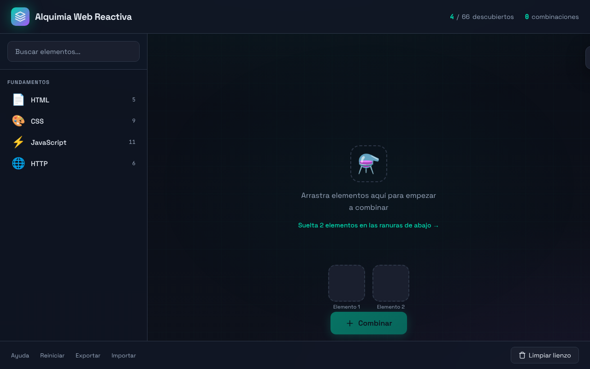 |
| CCA código |
nvidia/nemotron-3-ultra-550b-a55b:free OpenCode · 2026-11-19 20:47 UTC |
459.6 k in 69.1 k · out 12.7 k razon. 760 · caché 377.0 k |
25 | examples/basic.ts jest.config.js package.json src/cart.ts src/event-bus.ts src/index.ts src/storage.ts src/types.ts … y 24 más |
✔ npm ci + tsc compila ✔ 24/24 tests suyos en verde ✔ npm run dev corre los ejemplos ✖ 50 addItem concurrentes → guarda 1 ✖ suma EUR + USD como EUR ✖ id con ../ escribe fuera de la carpeta |
4 funciona, pero no escala |
Librería TypeScript ordenada (servicio, adaptadores de almacenamiento, bus de eventos) que compila y pasa sus 24 tests. Lo que pedía el prompt, «escalable», no aguanta: 50 peticiones concurrentes al mismo carrito dejan 1 línea, sin TTL, sin control de versiones y dinero en coma flotante. juicio | |
| A3D visual |
ollama/beam OpenCode · 2026-11-20 03:10 UTC |
63.9 k in 15.0 k · out 9.9 k razon. 0 · caché 39.1 k |
5 | alhambra.html | ✔ carga · alhambra.html ✔ carga sin errores; 8 KB ✔ el tour mueve la cámara de parada en parada ✖ la Alhambra son cajas y pilares |
7 funciona, pero son cajas |
El A3D más pequeño (8 KB, 209 líneas, 5 peticiones): seis paradas reales, botones para cada una y un tour automático que mueve la cámara de la Alcazaba al Generalife. Pero la Alhambra son cajas de colores rodeadas de un anillo de pilares, la cámara se pega a los volúmenes y el panel no muestra el texto de la parada durante el tour. juicio · ▶ en vivo |  |
| AIF visual |
ollama/beam OpenCode · 2026-11-20 03:11 UTC |
202.7 k in 52.9 k · out 27.9 k razon. 0 · caché 121.9 k |
7 | web-reactiva-alchemy.html | ✔ carga · web-reactiva-alchemy.html ✔ carga sin errores; 21 KB ✔ HTML + CSS y Terminal + Git combinan ✖ solo 12 de 169 elementos alcanzables ✖ contenido genérico |
5 solo se alcanzan 12 de 169 |
Mesa de dos ranuras con siete elementos iniciales de desarrollo web (HTML, CSS, JavaScript, Navegador, Servidor, Terminal, Git). Las primeras mezclas funcionan, pero de 169 elementos solo se pueden alcanzar 12: muchas recetas piden ingredientes, como React, que no salen de ninguna. De Web Reactiva tiene el nombre y algún «Podcast». juicio · ▶ en vivo |  |
| CCA código |
ollama/beam OpenCode · 2026-11-20 03:28 UTC |
240.5 k in 29.8 k · out 8.6 k razon. 0 · caché 202.1 k |
20 | package.json src/cart.js src/cartManager.js src/events.js src/http/server.js src/index.js src/inventory.js src/locking.js … y 3 más |
✔ npm test 4/4 ✔ 50 altas a la vez: 50 unidades (cerrojo en memoria) ✖ dinero en coma flotante: 0,10 × 3 = 0.30000000000000004 ✖ el precio lo manda el cliente ✖ sin almacenamiento compartido ni README |
4 funciona, no escala |
Node sin dependencias, 413 líneas: carrito, gestor con un cerrojo en memoria por carrito, repositorio en memoria, inventario opcional, eventos, cupones y una API HTTP, con 4 tests en verde. Pero el dinero va en coma flotante, el precio lo manda el cliente, todo vive en un proceso y no hay README. juicio | |
| A3D visual |
ollama/deepseek-v4.1-flash OpenCode · 2026-11-19 22:38 UTC |
2231.2 k in 90.7 k · out 73.6 k razon. 0 · caché 2066.9 k |
33 | alhambra-3d.html | ✔ carga · alhambra-3d.html ✔ carga sin errores, three.js desde jsDelivr ✔ vista general con colina, muralla, Carlos V, Generalife y Sierra Nevada ✖ en el tour la cámara se mete en la muralla y a los 35 s sigue en la parada 1 |
6 la mejor maqueta, el tour falla |
La vista general es la mejor de todo el benchmark: colina de la Sabika amurallada, Alcazaba con torres, Palacio de Carlos V con su patio circular, Generalife con la acequia, casas alrededor y Sierra Nevada. Pero al iniciar el recorrido la cámara se mete dentro de la muralla y a los 35 s sigue en la primera de solo 5 paradas. juicio · ▶ en vivo | 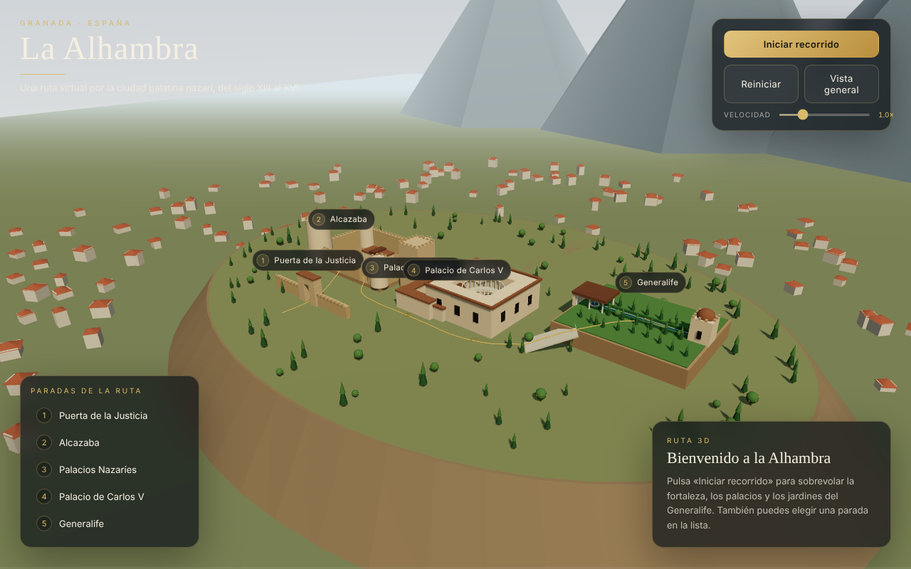 |
| AIF visual |
ollama/deepseek-v4.1-flash OpenCode · 2026-11-19 23:50 UTC |
2646.1 k in 136.5 k · out 92.1 k razon. 0 · caché 2417.4 k |
32 | index.html | ✔ carga · index.html ✔ carga sin errores; 86 KB sin dependencias ✔ arrastrar: Developer + IA → Copiloto, Café + Prompt → Idea ✔ 78 de 78 elementos alcanzables, el Atlas Malandriner incluido (juez/alcanzables.js) |
9 Infinite Craft de verdad |
La mecánica más fiel a Infinite Craft de todo el benchmark: lienzo libre donde se suelta una pieza sobre otra, almacén con buscador y una misión (descubrir el Atlas Malandriner). 78 elementos y 90 recetas sacados de webreactiva.com, todos alcanzables, con pistas, sonido y guardado. Pero no es infinito: fuera de las 90 recetas, las mezclas no dan nada. juicio · ▶ en vivo | 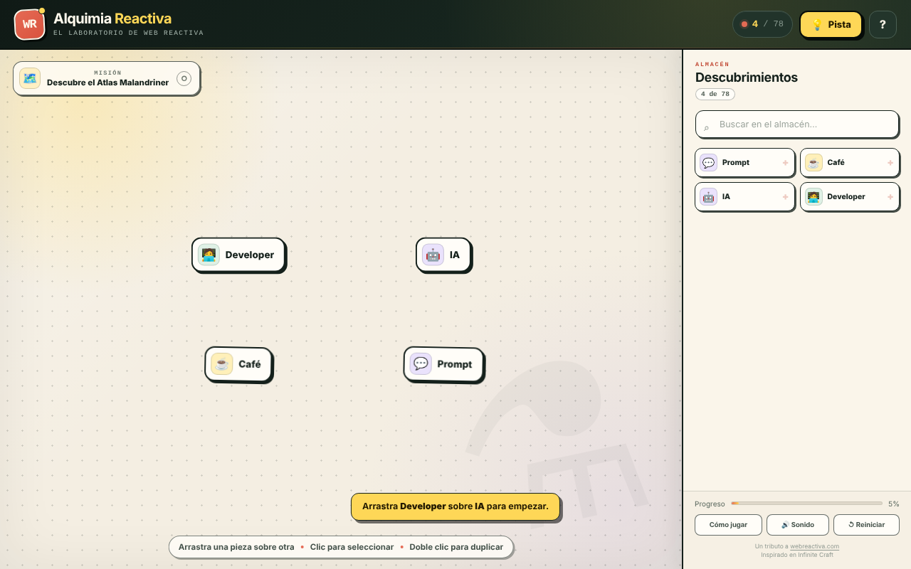 |
| CCA código |
ollama/deepseek-v4.1-flash OpenCode · 2026-11-19 22:47 UTC |
1143.5 k in 62.4 k · out 49.7 k razon. 0 · caché 1031.4 k |
26 | README.md index.html package.json server.js src/config/pricing.js src/core/Cart.js src/core/CheckoutService.js src/core/EventEmitter.js … y 12 más |
✔ carga · index.html ✔ npm test: 23/23 ✔ npm start sirve la tienda y añadir al carrito funciona ~ el carrito vive en localStorage: no hay backend que escalar |
6 bonito, escala el código, no el sistema |
Una tienda completa y muy cuidada (catálogo, búsqueda, carrito, cupones, envío, IVA, checkout) con un motor de precios por reglas, dinero en céntimos, almacenamiento intercambiable y 23 tests. Pero el carrito vive en localStorage y el servidor solo sirve estáticos: «escalable» lo resuelve como código fácil de ampliar, sin nada que aguante muchos usuarios. juicio |  |
| SEC seguridad |
ollama/deepseek-v4.1-flash OpenCode · 2026-11-23 20:52 UTC |
3103.0 k in 120.4 k · out 46.6 k razon. 0 · caché 2936.1 k |
30 | README_AUDITORIA.md SECURITY_AUDIT.md flags_encontrados.csv hallazgos.json |
– | 7 Ve mucho, con rangos anchos |
Informe de 38 hallazgos, todos con CWE, en el que el juez reconoce 34 de las 40 entradas y solo dos no se sostienen, pero la nota cuenta 22,5 (F3 56,6): ocho de sus rangos pasan de 20 líneas y diez entradas valen medio acierto, como si no diera línea. Se le escapan el oráculo de padding, la fuga de la URL interna del asistente, el logout, el token de soporte en claro y en la respuesta, y la página de noticias. juicio | |
| A3D visual |
ollama/glm-5.3 OpenCode · 2026-11-20 15:36 UTC |
3065.1 k in 61.9 k · out 150.5 k razon. 0 · caché 2852.6 k |
21 | alhambra-ruta-3d.html | ✔ carga · alhambra-ruta-3d.html ✔ carga sin errores; 61 KB con three.js 0.160 de jsDelivr ✔ 9 paradas en orden de visita: Justicia, Alcazaba, Aljibes, Mexuar, Arrayanes, Embajadores, Leones, Carlos V, Generalife ✔ la ruta guiada avanza sola con vuelos de cámara (parada 3 a los 4 min con render por software a 3 fps; 8,5 s de escena por parada) ✔ se reconoce: torres almenadas, patio circular de Carlos V, fuente de los Leones con arquerías, Patio de la Acequia con surtidores, vista aérea del recinto ✖ en Arrayanes la cámara queda contra un muro; en Leones el marcador «7» tapa media pantalla ✖ «Aquí se hospedó Washington Irving» en la Plaza de los Aljibes: se alojó dentro del palacio |
8 bonita, con tropiezos |
Maqueta con three.js y nueve paradas, de la Puerta de la Justicia al Generalife, con ruta guiada que vuela de una a otra, itinerario clicable y vista aérea en la que se reconoce el recinto: Carlos V circular, la fuente de los Leones, el Patio de la Acequia. Pero en Arrayanes la cámara queda contra un muro, en Leones un marcador tapa media vista y sitúa a Washington Irving hospedado en la Plaza de los Aljibes. juicio · ▶ en vivo | 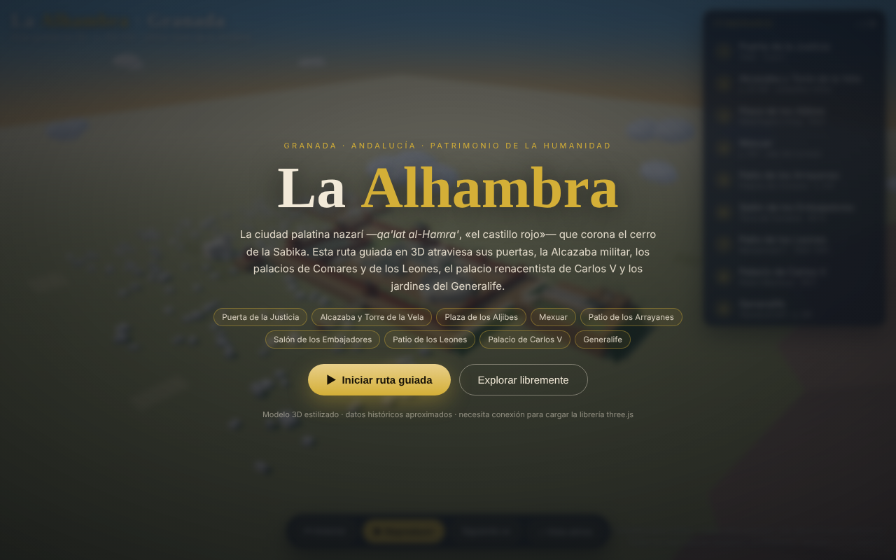 |
| AIF visual |
ollama/glm-5.3 OpenCode · 2026-11-20 15:52 UTC |
2753.7 k in 122.8 k · out 103.4 k razon. 0 · caché 2527.5 k |
29 | alquimia-reactiva.html | ✔ carga · alquimia-reactiva.html ✔ carga sin errores; un HTML de 42 KB sin dependencias ✔ tablero libre: se arrastra desde la barra al tablero y se suelta una ficha sobre otra ✔ Humano + Café → Developer; Prompt + Terminal → Script; Café + Café → Café Doble; Developer + Script → Código ✔ 187 de 187 elementos alcanzables desde 4 básicos, 192 recetas sin choques (juez/alcanzables.js) ✔ modo infinito: Humano + Script (sin receta) → «Humano Infinito», contado aparte como invento (✦1) ✔ contenido de webreactiva.com (leyó la portada): Programa con IA, Fichómetro, Atlas Malandriner, En Pantuflas, Audio 24/7, Sin alucinar, Contenido humano, 15 €/mes ✔ guarda en localStorage (8/187 ✦1 tras recargar), buscador, pistas y 8 retos |
10 infinito y de la casa |
Tablero libre donde se suelta una ficha sobre otra, 187 elementos y 192 recetas todos alcanzables desde Humano, Café, Prompt y Terminal, y un generador para las mezclas sin receta que cuenta los inventos aparte. El contenido sale de la portada de webreactiva.com (Programa con IA, Fichómetro, Atlas Malandriner, En Pantuflas, «sin alucinar»), con pistas, retos, buscador y guardado. juicio · ▶ en vivo | 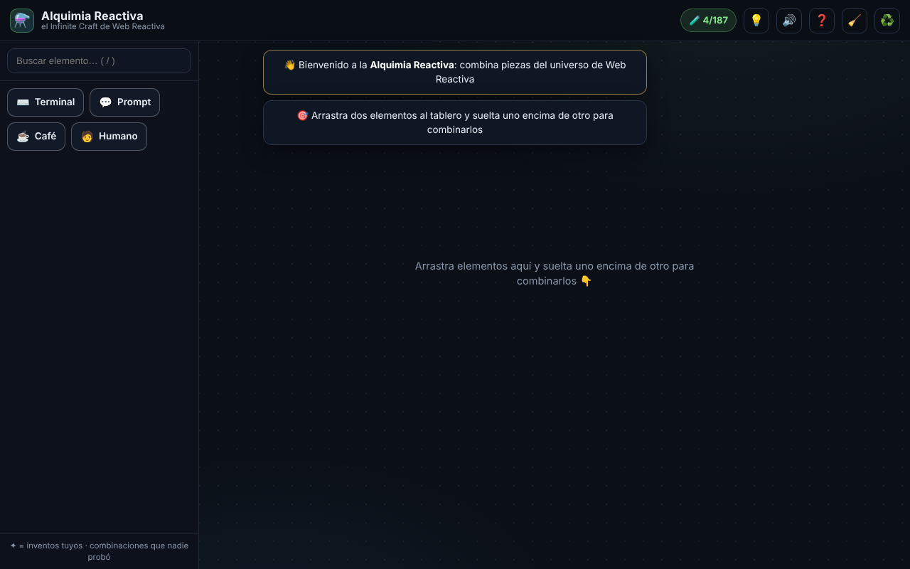 |
| CCA código |
ollama/glm-5.3 OpenCode · 2026-11-20 16:01 UTC |
1975.7 k in 88.5 k · out 68.9 k razon. 0 · caché 1818.4 k |
31 | .gitignore README.md package.json public/app.js public/index.html public/styles.css src/adapters/memory/memory-cart-repository.ts src/adapters/memory/memory-product-repository.ts … y 80 más |
✔ npm ci, build y 19/19 tests (vitest); arranca la API con una interfaz web de demostración ✔ 50 altas a la vez en una instancia: 50 guardadas ✖ dos instancias con el mismo SQLite: 44 guardadas y 6 errores 500; sin control de versión ✔ dinero en céntimos, precio del catálogo (se ignora el del cliente), una sola moneda ✔ valida cantidad 0, negativa, decimal, enorme y en texto; productos y carritos con «../»; cuerpo vacío ~ entrega dist/ y data/cart.db junto al código |
8 limpio, una sola instancia |
API Express en TypeScript con capas y puertos, SQLite nativo de Node, dinero en céntimos, precio siempre del catálogo, descuentos, envío, IVA, checkout con stock, validación estricta y una interfaz web; compila, pasa 19 tests y 50 altas a la vez en una instancia no pierden nada. Pero no tiene control de versión: con dos instancias sobre el mismo SQLite seis de cincuenta altas acaban en error 500. juicio | |
| A3D visual |
ollama/glm-5.3-flash OpenCode · 2026-11-20 00:36 UTC |
1822.9 k in 77.6 k · out 63.8 k razon. 0 · caché 1681.5 k |
29 | alhambra-3d.html | ✔ carga · alhambra-3d.html ✔ carga sin errores; 37 KB ✔ la ruta guiada arranca sola y avanza (15, 35 y 60 s) ✔ vista libre: Comares, Carlos V, Leones, Alcazaba, Justicia, Darro ✖ empieza dentro de un muro y en el recorrido roza las paredes |
9 se recorre y se reconoce |
Ruta guiada a pie de calle que arranca sola y avanza por 8 puntos (Justicia, Vino, Alcazaba, Carlos V, Leones, Arrayanes y Comares, Generalife) más un modo libre con una de las mejores maquetas del benchmark: la Torre de Comares, Carlos V con su patio circular, el anillo de columnas de los Leones, la Alcazaba almenada y el Darro. Pero empieza dentro de un muro y en el recorrido la cámara roza las paredes. juicio · ▶ en vivo | 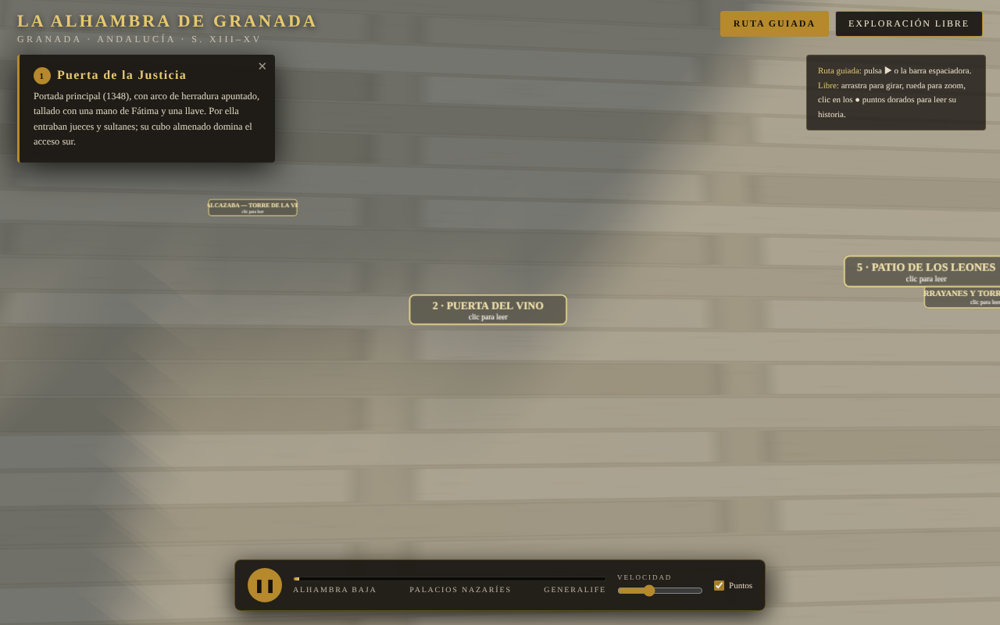 |
| AIF visual |
ollama/glm-5.3-flash OpenCode · 2026-11-20 00:42 UTC |
250.7 k in 65.3 k · out 57.8 k razon. 0 · caché 127.6 k |
4 | web-reactiva-craft.html | ✔ carga · web-reactiva-craft.html ✔ carga sin errores; 25 KB ✔ tras cerrar la bienvenida, soltar una ficha sobre otra combina ✔ 145 de 145 recetas alcanzables; las mezclas sin receta dan «invenciones raras» ✖ contenido inventado: «Nacho Ojea», «Trece Tigres», «La Red» no son de Web Reactiva |
8 buen juego, Web Reactiva inventado |
Mecánica muy fiel a Infinite Craft (mesa infinita con zoom, soltar una ficha sobre otra, panel de descubrimientos con buscador, sonidos), 145 recetas todas alcanzables y un generador de «invenciones raras» para las mezclas sin receta. Pero el contenido de Web Reactiva es inventado: «Nacho Ojea», «Trece Tigres», «La Red», ZX Spectrum y GeoCities; parte de Internet, Radio, Cine y Juego. juicio · ▶ en vivo | 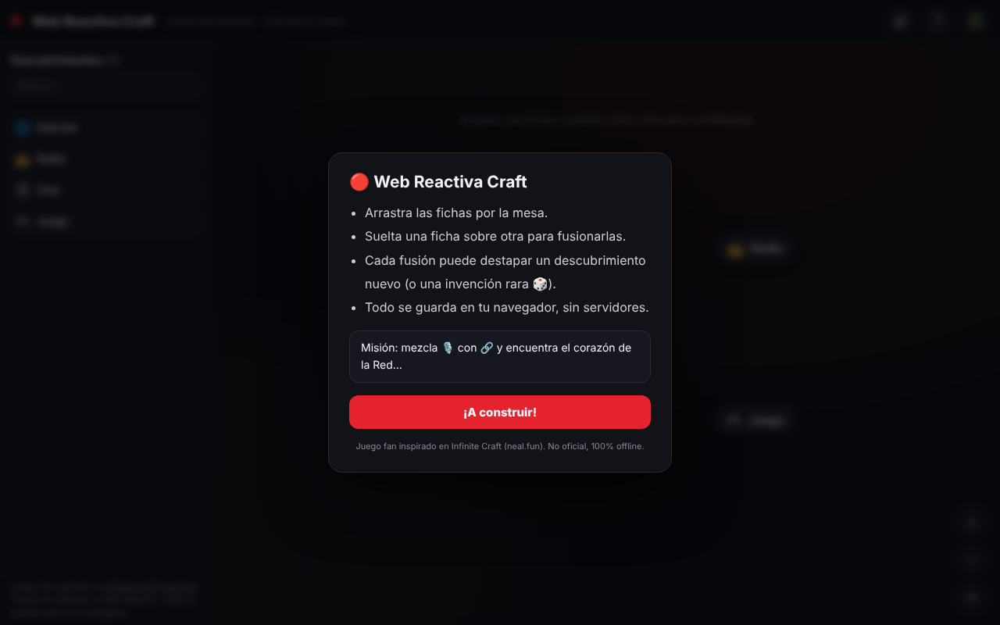 |
| CCA código |
ollama/glm-5.3-flash OpenCode · 2026-11-19 22:45 UTC |
1083.0 k in 45.9 k · out 32.9 k razon. 0 · caché 1004.2 k |
33 | .gitignore .pytest_cache/.gitignore .pytest_cache/CACHEDIR.TAG .pytest_cache/README.md .pytest_cache/v/cache/lastfailed .pytest_cache/v/cache/nodeids README.md __pycache__/conftest.cpython-313-pytest-9.1.1.pyc … y 44 más |
✔ pytest: 24/24 ✔ 50 hilos concurrentes en memoria: 50 líneas ✔ Decimal: 0,10 × 3 = 0.30 ✖ adaptador Redis: cualquier excepción acaba en AttributeError (self._client.WatchError no existe) |
8 bien diseñado, Redis roto |
Python con capas (dominio, aplicación, infraestructura, API HTTP), Decimal para el dinero, precios del catálogo, bloqueo por carrito en memoria, límites y 24 tests en verde. Pero el adaptador de Redis, que es lo que lo haría escalar, captura self._client.WatchError, que no existe: un conflicto de concurrencia o cualquier error de negocio acaba en AttributeError. juicio | |
| SEC seguridad |
ollama/glm-5.3-flash OpenCode · 2026-11-23 20:51 UTC |
1158.0 k in 120.2 k · out 20.2 k razon. 0 · caché 1017.6 k |
18 | informe-auditoria-seguridad-quokka-bazaar.md | – | 5 Ve casi todo, localiza a medias |
Informe de 39 hallazgos en el que el juez reconoce 35 de las 40 entradas y solo uno no se sostiene, pero con la regla estricta se queda en 22 aciertos (15 con línea y 14 a medio punto) y F3 55,7: seis aciertos no dan línea y ocho citan rangos de más de 20 líneas, que valen como sin línea. Se le escapan el oráculo de padding, la fuga de la URL interna del asistente, la inyección por salida de herramientas, el token de soporte en claro y la página de noticias. juicio | |
| A3D visual |
ollama/inkling-2-small OpenCode · 2026-11-20 01:35 UTC |
1202.2 k in 176.1 k · out 47.9 k razon. 0 · caché 978.2 k |
24 | alhambra-3d.html | ✔ carga · alhambra-3d.html ✔ carga sin errores; 43 KB ✔ el recorrido automático viaja de parada en parada ✖ en los patios la cámara se mete en los muros |
9 bonita y se recorre |
Maqueta clara del cerro de la Sabika con muralla, Alcazaba con bandera, Comares, Generalife con su alberca, Albaicín, el Darro y Sierra Nevada, 9 paradas con textos correctos y un recorrido automático que viaja de verdad. Pero al bajar a los patios la cámara se mete en los muros, y Comares sale como una torre redonda con cúpula. juicio · ▶ en vivo |  |
| AIF visual |
ollama/inkling-2-small OpenCode · 2026-11-20 01:41 UTC |
688.7 k in 152.8 k · out 42.1 k razon. 0 · caché 493.8 k |
15 | alquimia-reactiva.html | ✔ carga · alquimia-reactiva.html ✔ carga sin errores; 41 KB ✔ ficha sobre ficha combina; 125 de 125 alcanzables ~ soltar desde la barra sobre una ficha no combina ~ contenido de Web Reactiva a medias |
9 se juega, Web Reactiva a medias |
Mesa libre con fichas que se combinan soltando una sobre otra, 125 elementos todos alcanzables y un generador para las mezclas sin receta. Parte de Agua, Fuego, Aire y Tierra y mezcla programación genérica (React, Rust, Docker) con algo de Web Reactiva (podcast, masterclass, «Maratón WR», «Membresía WR», «Slow Content»), sin mirar la web. juicio · ▶ en vivo | 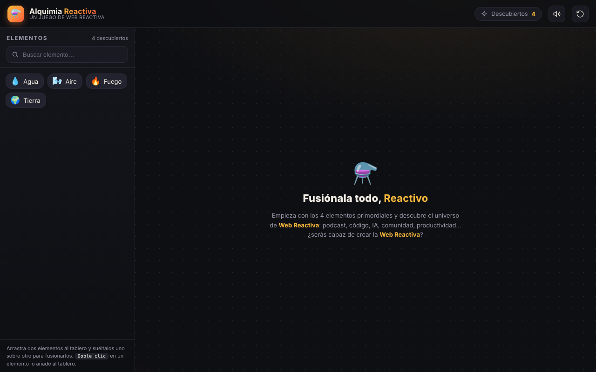 |
| CCA código |
ollama/inkling-2-small OpenCode · 2026-11-20 01:44 UTC |
1042.4 k in 145.2 k · out 31.4 k razon. 0 · caché 865.8 k |
40 | .gitignore README.md package.json src/application/cartService.ts src/application/cartView.ts src/application/ports.ts src/config.ts src/domain/cart.ts … y 16 más |
✔ build y 21/21 tests ✔ 50 altas a la vez: 50 guardadas ✔ precio del catálogo, céntimos, CAS por versión, TTL ~ solo repositorios en memoria: varias instancias no comparten carrito |
9 bien diseñado, sin Redis |
API Fastify sin estado en TypeScript, con capas y puertos, dinero en céntimos, precio del catálogo, cupones, IVA, envío, caducidad de carritos y compare-and-set por versión en el repositorio. Compila, pasa 21 tests y 50 altas a la vez no pierden nada. Pero solo trae repositorios en memoria: Redis o Postgres quedan como «pendiente». juicio | |
| SEC seguridad |
ollama/inkling-2-small OpenCode · 2026-11-23 20:52 UTC |
852.4 k in 261.0 k · out 16.5 k razon. 0 · caché 575.0 k |
16 | SECURITY_AUDIT.md | – | 4 Ve mucho, localiza poco |
Informe de 46 hallazgos que, a juicio, cubre 32 de las 40 entradas y solo tiene 6 que no son fallos, pero casi nunca da línea: 2 aciertos con línea y 29 a medio punto dejan el F3 estricto en 41,4. Se le escapan el oráculo de padding, las credenciales del seed, la fuga de la URL del asistente, el logout, la página de noticias y, como hallazgo, la SQLi de admin/reviews. juicio | |
| A3D visual |
ollama/kimi-k3.1-pro OpenCode · 2026-11-20 01:48 UTC |
1008.0 k in 53.4 k · out 44.6 k razon. 0 · caché 910.0 k |
23 | index.html | ✔ carga · index.html ✔ carga sin errores; 67 KB sin dependencias ✔ el recorrido lleva la cámara de parada en parada ✔ vista limpia y textos correctos |
10 el mejor A3D, sin librerías |
Una maqueta 3D con motor propio, sin three.js ni nada externo, que se reconoce (murallas almenadas, Alcazaba, Carlos V con su patio circular, los patios nazaríes con su fuente, el Generalife entre cipreses) y un recorrido de 6 paradas que lleva la cámara de una a otra sin atravesar nada. Diseño de guía turística: itinerario con tiempos, fichas, plano, atardecer, historia y consejos. juicio · ▶ en vivo | 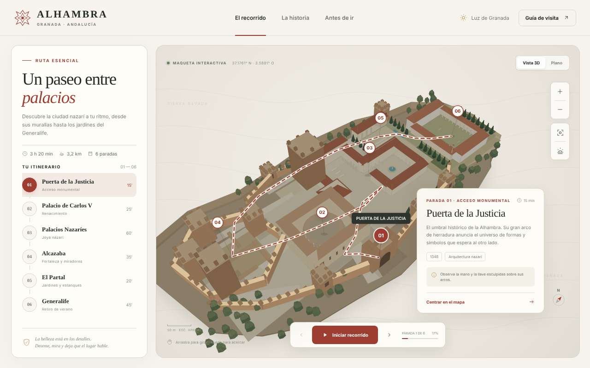 |
| AIF visual |
ollama/kimi-k3.1-pro OpenCode · 2026-11-20 01:58 UTC |
1714.8 k in 85.5 k · out 49.5 k razon. 0 · caché 1579.7 k |
25 | index.html | ✔ carga · index.html ✔ carga sin errores; 90 KB ✔ ficha sobre ficha combina; 98 de 98 alcanzables ✔ contenido real de webreactiva.com ✖ soltar desde la colección sobre una ficha la borra |
9 pulido y de Web Reactiva |
Contenido sacado de cuatro páginas de webreactiva.com (Malandriner, En pantuflas, Claude Code, Skills, MCP, SDD, «Deploy en viernes»), 98 elementos todos alcanzables, rangos («Aprendiz en pantuflas»), hitos, pistas, bitácora y una interfaz de producto. Mesa libre donde se combina soltando una ficha sobre otra. No es infinito: las mezclas sin receta dan un mensaje. juicio · ▶ en vivo |  |
| CCA código |
ollama/kimi-k3.1-pro OpenCode · 2026-11-20 02:07 UTC |
174.6 k in 17.6 k · out 12.7 k razon. 0 · caché 144.3 k |
11 | main.py models/__init__.py models/__pycache__/__init__.cpython-313.pyc models/__pycache__/carrito.cpython-313.pyc models/__pycache__/item_carrito.cpython-313.pyc models/__pycache__/producto.cpython-313.pyc models/carrito.py models/item_carrito.py … y 8 más |
✔ 17/17 tests y main.py ✔ Decimal, una moneda, precio del catálogo, stock ✔ 50 hilos a la vez: 50 líneas ✖ una clase en memoria: sin servicio, sin persistencia, sin nada para escalar |
6 correcto, pero no escala |
Una clase Carrito en Python, limpia y bien validada (Decimal, una moneda por carrito, precio y stock del catálogo, 17 tests), pero sin servicio, sin persistencia y sin nada que responda a «escalable»: el carrito vive en un objeto en memoria y no hay README que lo explique. juicio | |
| A3D visual |
ollama/minimax-m3 OpenCode · 2026-11-19 22:39 UTC |
11368.3 k in 232.8 k · out 199.5 k razon. 0 · caché 10935.9 k |
80 | alhambra-3d.html | ✔ carga · alhambra-3d.html ✔ carga sin errores; 15 paradas, 4 vistas, hora del día, voz, minimapa ✖ el recorrido apenas avanza (1-3 % en 25 s) ✖ saltar a una parada cambia la ficha pero no mueve la cámara ✖ el minimapa tapa las paradas 11-15 de la lista |
4 lo más ambicioso, no se recorre |
El A3D con más cosas: 15 paradas con textos ricos y consejos de visita, 4 vistas, deslizador de hora del día, narración por voz, minimapa y arcos de herradura generados por código. Pero el recorrido apenas avanza, saltar a una parada no mueve la cámara (se queda en la plaza de entrada) y el minimapa tapa las paradas 11 a 15 de la lista. juicio · ▶ en vivo | 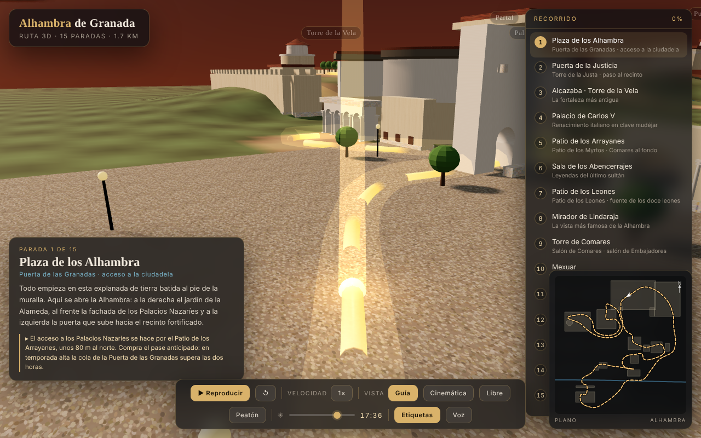 |
| AIF visual |
ollama/minimax-m3 OpenCode · 2026-11-19 23:13 UTC |
11453.8 k in 226.6 k · out 168.8 k razon. 0 · caché 11058.4 k |
76 | alquimia-reactiva.html | ✔ carga · alquimia-reactiva.html ✔ carga sin errores; 192 KB, funciona sin conexión ✔ 6 de 6 mezclas probadas dan un elemento nuevo ✔ logo, colores y tipografía de Web Reactiva |
9 el mejor AIF, con mucho |
399 elementos y 1780 recetas sacados de webreactiva.com de verdad (glosario, cursos, skills, comunidad Malandriner), un generador para las mezclas sin receta, 7 legendarios, pistas, bitácora, compartir por URL, y el logo, los colores y la tipografía de la marca. Funciona sin conexión. Le falta el lienzo libre de Infinite Craft: combina en dos calderos. juicio · ▶ en vivo | 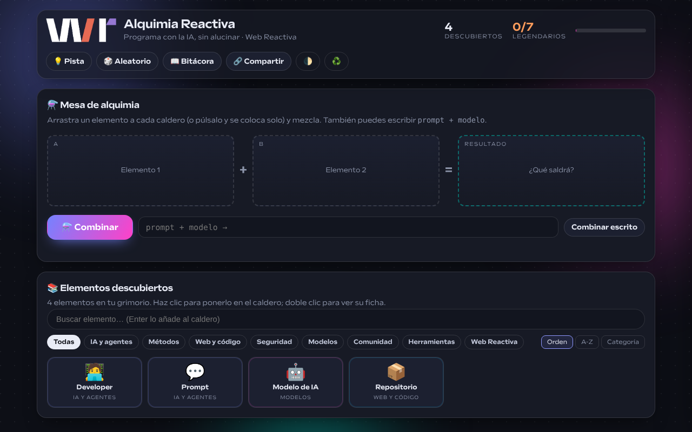 |
| CCA código |
ollama/minimax-m3 OpenCode · 2026-11-20 00:06 UTC |
12922.7 k in 137.4 k · out 112.2 k razon. 0 · caché 12673.1 k |
155 | .env.example .gitignore .prettierignore .prettierrc.json README.md docker-compose.yml eslint.config.js package.json … y 254 más |
✔ npm ci, build, typecheck y lint ✔ 69/69 tests, también los de integración con Redis ✔ dos instancias con el mismo Redis: 40 altas a la vez, 22 guardadas = 22 aceptadas, 18 con 409 explícito ✔ límite de 10 unidades por línea (422) |
10 escala de verdad, con Redis |
Monorepo TypeScript con dominio hexagonal, API Fastify sin estado, Redis con scripts Lua (CAS por versión, reserva de stock, idempotencia), outbox, métricas, SSE y una tienda React. Compila, pasa 69 tests y, con dos instancias sobre el mismo Redis, 40 altas a la vez no pierden ni un dato. Lo único discutible: bajo mucha contención devuelve 409 en vez de reintentar más. juicio | |
| A3D visual |
ollama/minimax-m3.1-flash OpenCode · 2026-11-20 02:11 UTC |
8784.4 k in 134.5 k · out 120.7 k razon. 0 · caché 8529.3 k |
90 | alhambra-3d.html build.py src/js/01_core.js src/js/02_entorno.js src/js/03_arquitectura.js src/js/03b_jardines.js src/js/04_recorrido.js src/js/05_ui.js … y 4 más |
✔ carga · alhambra-3d.html ✔ carga sin errores; 751 KB sin conexión ✔ el recorrido avanza (lento) ✖ fichas con datos inventados ✖ paneles y etiquetas tapan la escena |
8 mucho detalle, textos inventados |
El A3D más grande: 16 paradas, cámara sobre una curva que recorre el recinto, Carlos V con su patio circular, murallas, jardines, Sierra Nevada, minimapa, cuatro luces y three.js incrustado para funcionar sin conexión. Pero los paneles tapan media escena, las etiquetas se pisan y las fichas tienen datos inventados: una figura de «El Descubridor» que «señala La Meca» sobre la Puerta de la Justicia, Carlos V «erigido entre 1527 y 1537», Santa María como «la referencia más reconocible». juicio · ▶ en vivo | 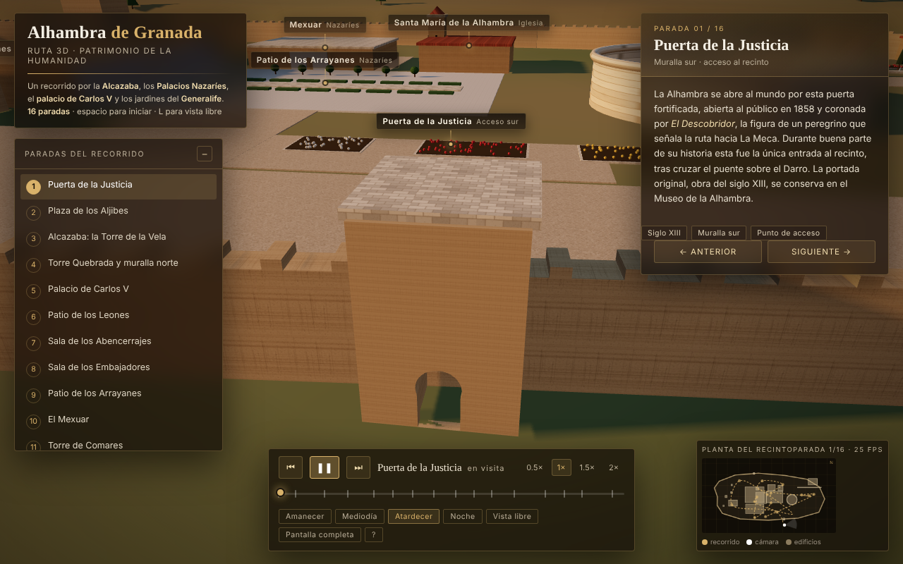 |
| AIF visual |
ollama/minimax-m3.1-flash OpenCode · 2026-11-20 02:37 UTC |
4636.5 k in 124.0 k · out 91.3 k razon. 0 · caché 4421.2 k |
55 | alquimia-web-reactiva.html | ✔ carga · alquimia-web-reactiva.html ✔ carga sin errores; 70 KB ✔ elemento sobre elemento combina; 203 de 203 alcanzables ✔ contenido real y amplio de webreactiva.com ~ sin generador para mezclas sin receta |
9 203 elementos de Web Reactiva |
Mesa libre donde se suelta un elemento sobre otro, 203 elementos y 199 recetas todos alcanzables, sacados de varias páginas de webreactiva.com: agentes, skills, SDD con OpenSpec y Spec Kit, MCP, costes de tokens, seguridad y la capa de marca (Dani Primo, Zona y Atlas Malandriner, En pantuflas). Pistas, recetario, compartir y guardado. Fuera de las recetas no hay generador. juicio · ▶ en vivo | 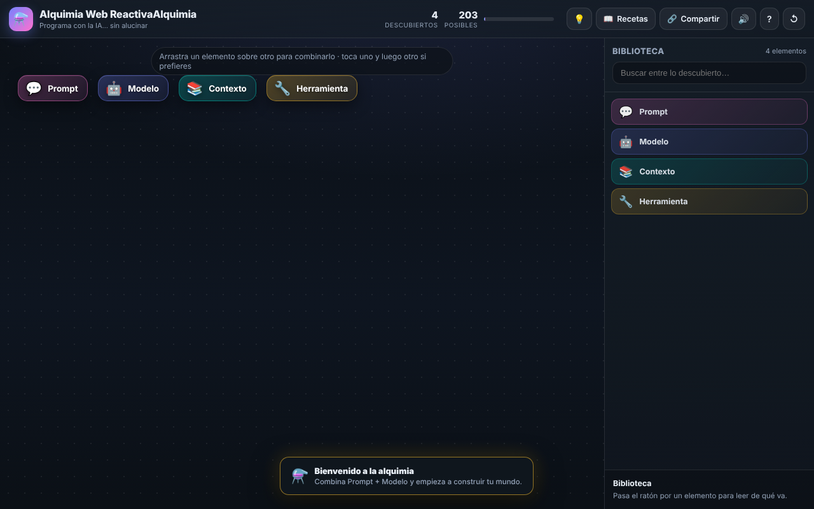 |
| CCA código |
ollama/minimax-m3.1-flash OpenCode · 2026-11-20 02:48 UTC |
14602.0 k in 135.3 k · out 113.4 k razon. 0 · caché 14353.3 k |
154 | .dockerignore .env.example .gitignore Dockerfile README.md docker-compose.yml eslint.config.js package.json … y 119 más |
✔ build, typecheck, lint y 42/42 tests (arrancan su Redis) ✔ dos instancias sobre el mismo Redis: 40 altas a la vez, 40 aceptadas, 40 guardadas ✔ JWT (401 sin token), precio del servidor, céntimos |
10 el carrito más completo |
API Fastify sin estado con todo el carrito en Redis y cada mutación atómica en un script Lua, más concurrencia optimista por versión, idempotencia, outbox con worker y grupo de consumidores, rate limiting distribuido, JWT, métricas, Docker Compose para escalar réplicas y una prueba de carga con k6. Compila, pasa 42 tests y, con dos instancias, 40 altas a la vez entran todas sin un conflicto. juicio | |
| A3D visual |
ollama/mistral-large-4 OpenCode · 2026-11-20 15:36 UTC |
133.6 k in 25.1 k · out 25.1 k razon. 0 · caché 83.5 k |
10 | alhambra-ruta-3d.html | ✔ carga · alhambra-ruta-3d.html ✔ carga sin errores; 32 KB con three.js 0.160 de unpkg ✔ 8 paradas: Justicia, Alcazaba, Arrayanes, Comares, Leones, Dos Hermanas, Abencerrajes, Generalife ✔ la ruta guiada recorre todas las paradas y vuelve a empezar (a 4×: Arrayanes a los 30 s, Leones a los 60, Generalife a los 90) ✖ la cámara acaba dentro o pegada a los muros: en Leones mira una caja de azulejos, en Abencerrajes y el Generalife solo hay pared ~ se reconocen murallas almenadas y torres; ni la fuente de los Leones, ni Arrayanes, ni Carlos V ✖ «la gran losa de mármol que da nombre» a la Sala de las Dos Hermanas: son dos losas gemelas ~ con la ruta en pausa, pulsar un lugar de la lista no cambia la ficha |
7 se recorre, entre muros |
Ruta guiada con three.js por ocho paradas de los palacios nazaríes al Generalife, con lista, fichas, vuelo libre y velocidad hasta 4×; la cámara viaja de una a otra y el recorrido vuelve a empezar. Pero casi todas las vistas acaban pegadas a un muro, solo se reconocen murallas y torres, y una ficha se equivoca con el nombre de la Sala de las Dos Hermanas. juicio · ▶ en vivo | 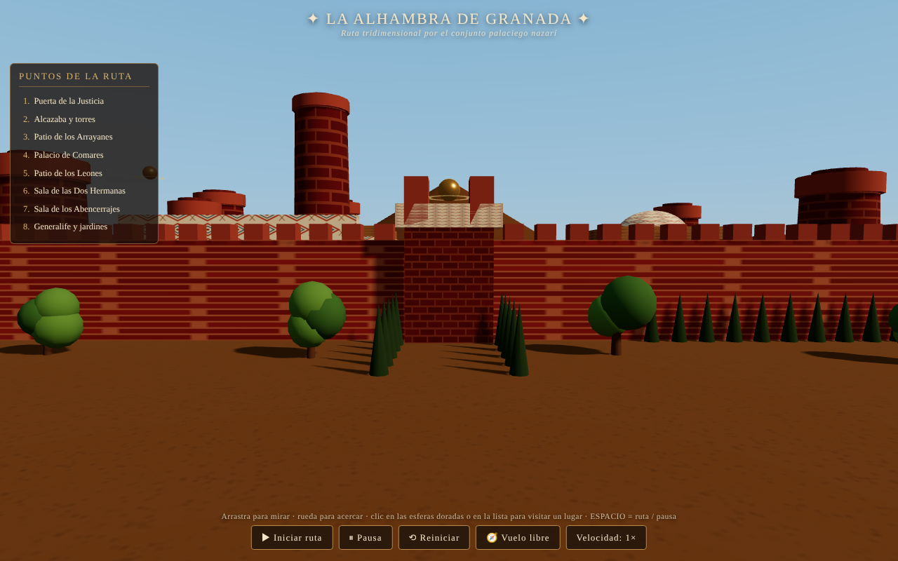 |
| AIF visual |
ollama/mistral-large-4 OpenCode · 2026-11-20 17:27 UTC |
267.2 k in 34.6 k · out 62.0 k razon. 0 · caché 170.5 k |
9 | reactiva-craft.html | ✔ carga · reactiva-craft.html ✔ carga sin errores; un HTML de 27 KB sin dependencias ~ se combina seleccionando dos fichas del lienzo (clic y clic); arrastrar una sobre otra no hace nada ✔ Computadora + Internet → Navegador; Papel + Internet → Periódico; Computadora + Electricidad → Programa ✔ 268 de 268 elementos alcanzables desde 4 bases (juez/alcanzables.js) ✖ sin modo infinito: Papel + Electricidad no tiene receta y no da nada ✖ contenido de desarrollo web genérico; de Web Reactiva solo el nombre, como combinación de Podcast + Comunidad ✔ guarda en localStorage (7/268 tras recargar), buscador y pista |
6 funciona, sin Web Reactiva |
Juego de combinar con 268 elementos y 264 recetas, todos alcanzables desde Computadora, Internet, Electricidad y Papel, con pista, buscador y guardado. Pero se combina seleccionando dos fichas en vez de soltar una sobre otra, las mezclas sin receta no dan nada y el contenido es desarrollo web genérico: de Web Reactiva solo queda el nombre, como Podcast + Comunidad. juicio · ▶ en vivo | 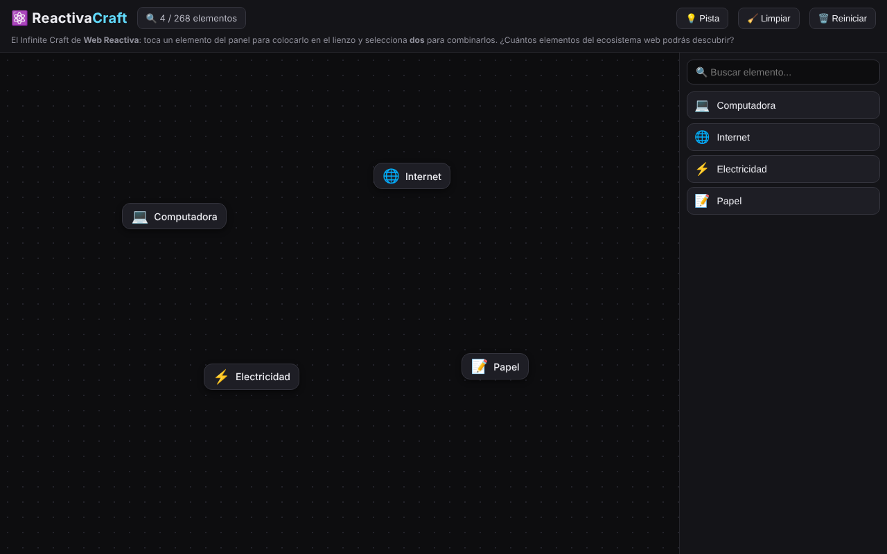 |
| CCA código |
ollama/mistral-large-4 OpenCode · 2026-11-20 17:50 UTC |
190.5 k in 29.6 k · out 39.5 k razon. 0 · caché 121.3 k |
9 | README.md cart/__init__.py cart/__pycache__/__init__.cpython-313.pyc cart/application/__init__.py cart/application/__pycache__/__init__.cpython-313.pyc cart/application/__pycache__/ports.cpython-313.pyc cart/application/__pycache__/pricing.cpython-313.pyc cart/application/__pycache__/services.cpython-313.pyc … y 20 más |
✔ sin dependencias: 24/24 tests (unittest) y la demo, en memoria y con SQLite ✔ 50 altas a la vez (hilos) con un servicio: 50 guardadas ✖ dos servicios sobre el mismo SQLite: 50 aceptadas y 47 guardadas; se pierden 3 sin aviso ✔ dinero en céntimos (0,10 × 3 = 0,30), EUR + USD da error, el precio sale del catálogo (la API no admite precio) ✔ valida cantidad 0, negativa, decimal, en texto y por encima de 999; SKU y carrito con «../» ~ librería sin servidor; el cerrojo que la protege vive en el proceso |
8 sólido en un proceso |
Librería Python sin dependencias, hexagonal, con dinero en céntimos, una moneda por carrito, precio del catálogo, descuentos e impuestos enchufables, eventos de dominio, límites y repositorio en memoria o SQLite; 24 tests y una demo que funcionan, y 50 altas a la vez con un servicio no pierden nada. Pero la concurrencia depende de un cerrojo del proceso: con dos servicios sobre el mismo SQLite se pierden 3 de 50 altas sin aviso. juicio | |
| A3D visual |
ollama/muse-spark-open OpenCode · 2026-11-20 03:15 UTC |
88.0 k in 8.3 k · out 16.2 k razon. 0 · caché 63.5 k |
5 | alhambra-ruta-3d.html | ✔ carga · alhambra-ruta-3d.html ✔ carga sin errores; 45 KB ✔ el recorrido automático avanza ✖ ~150 errores al saltar de parada ✖ la cámara va pegada a la geometría, también en vista aérea |
7 bonita por fuera, cámara perdida |
Interfaz muy cuidada (Cinzel, fichas con datos, progreso, minimapa, leyenda, día y noche) y 7 paradas con textos correctos, y el recorrido automático avanza. Pero la escena está tan a escala que la cámara va siempre pegada a los volúmenes, hasta en «vista aérea», y al saltar de parada con «Siguiente» la consola se llena de errores (unos 150, uno por fotograma). juicio · ▶ en vivo | 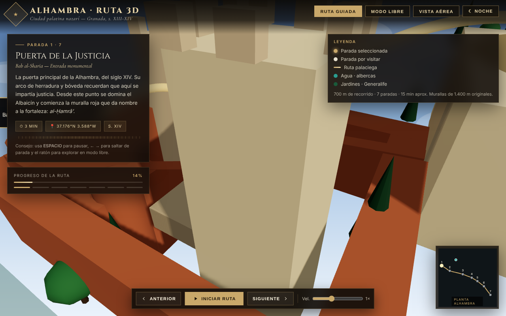 |
| AIF visual |
ollama/muse-spark-open OpenCode · 2026-11-20 03:16 UTC |
391.6 k in 126.7 k · out 24.2 k razon. 0 · caché 240.7 k |
9 | index.html | ✔ carga · index.html ✔ carga sin errores; 52 KB ✔ ficha sobre ficha combina ✖ Código + IA da Python, no Prompt: 68 de 102 alcanzables ✖ el botón Combinar no registra |
8 muy de la casa, rama de IA bloqueada |
Contenido sacado de cuatro páginas de webreactiva.com con mucho humor de la casa («Combustible oficial del developer. 100 % malandriner», «Dirigible (400 € en tokens)»), mesa libre donde se combina soltando una ficha sobre otra, filtros, pistas y recetas secretas. Pero una receta posterior (IA + Código = Python) pisa a la que anuncia como clave (Código + IA = Prompt): sin Prompt no se puede llegar a agentes, skills, MCP, Claude Code ni SDD. Solo 68 de 102 alcanzables, y el botón «Combinar» no registra nada. juicio · ▶ en vivo |  |
| CCA código |
ollama/muse-spark-open OpenCode · 2026-11-20 03:26 UTC |
603.7 k in 16.6 k · out 25.7 k razon. 0 · caché 561.4 k |
24 | .gitignore README.md api/__init__.py api/__pycache__/__init__.cpython-313.pyc api/__pycache__/app.cpython-313.pyc api/app.py api/fastapi_app.py cart/__init__.py … y 22 más |
✔ pytest 12/12 y main.py ✔ 50 hilos con 4 shards: 50 unidades ✔ versión optimista en el almacenamiento, Decimal, precio del inventario ~ sin almacenamiento compartido real (Redis/DynamoDB «intercambiable») |
9 bien pensado, sin Redis |
Python sin dependencias: agregado de carrito con límites, motor de precios con reglas (por volumen, categoría, cupón), IVA y envío, reserva de stock, bus de eventos, servicio sin estado con versión optimista y reintentos, almacenamiento en memoria, en fichero o repartido en shards, y una API REST. Pasa 12 tests y 50 hilos no pierden nada. Pero Redis o DynamoDB son solo un contrato. juicio |